Updates Log
3.76
What’s new and improved
Version:
Now supports the Blender 5 API, while maintaining backward-compatibility with older Blender versions. Rig, Remap, Export and Picker modules updated
Export:
New “Reset Transforms” setting to reset controllers transforms between each actions when baking. Useful if some bones are not keyframed, avoiding persistent offsets shared across actions.
New “Exclude” tag to remove given bones from the export skeleton
New Select and Deselect All buttons in the actions export list
Rig:
Eyebrows: Support of arbitrary amount of eyebrow bones
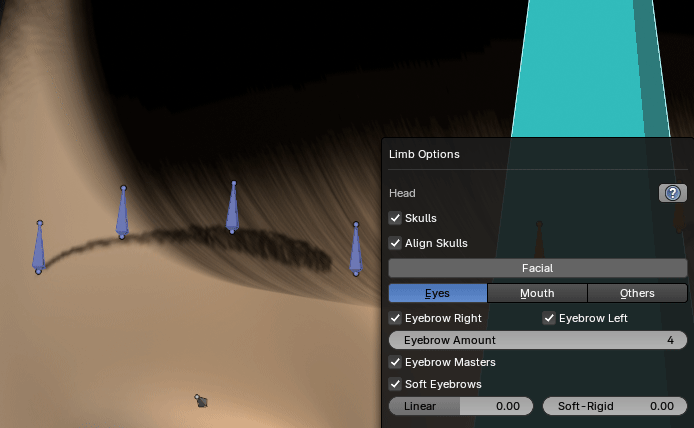
Eyebrows: Preserve shape when changing amount
Tongue: Support arbitrary amount of tongue bones
Popup safety warning when deleting a rig with the X button
Picker: Support of multiple eyebrows
Freed all cheek controllers transforms by default for more flexibility
New Soft-Cheek option simulating the cheeks elasticity, bulge, for more natural deformations when moving the lips corners
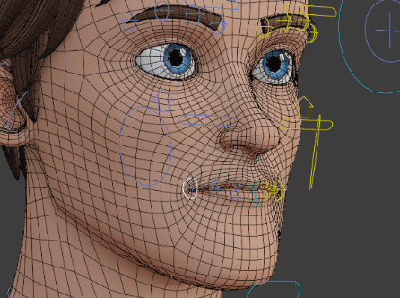
Lips roll bones are now optional
Limb Options UI: Hide greyed out settings when the parent setting is not enabled, for more compact UI
Rig Tools:
UI: Removed spacing between foot roll properties for more compact style interface
Remap:
New “Bake Only Existing Keyframes” setting
IK-FK switch is now keyframed on the first frame
Prefs:
Installing AI files now automatically removes the previous files first
Smart:
New “head_tip” marker for a better estimation of the head joint
AI: Implemented new head_tip marker in the deep learning prediction
“Use Markers Depth” is now always disabled by default, when placing the markers manually
AI: New “Guess Facial” feature, estimating the facial markers position automatically
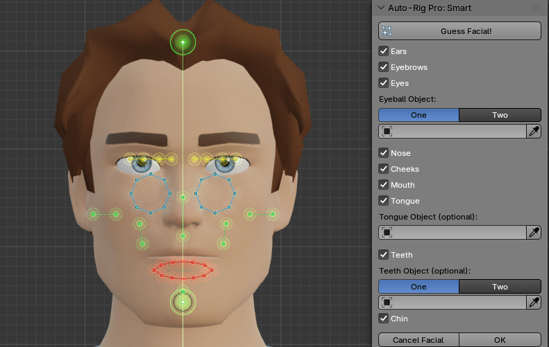
AI: Improved deep learning model files to version 1.18
The wrist marker depth was not evaluated when “Use Markers Depth” is enabled
Fixed
QuickRig Compatibility: “Auto IK Roll” not applied in limb options
Blender 4.5 compatibility regression: fcurves access broken (add fist pose, etc…)
Blender 4.0 compatibility regression: parent collection not supported in sort_armature_collections()
Unknown compatibility breakage: flush() function not recognized, likely due to a custom python environment
Unknown compatibility breakage: flush() function not recognized in export code, likely due to a custom python environment
Prefs: AI files installation throwing an error if the folder was not found
Rig:
Lips corners mini not removed when disable the whole head
Error when adding an armature preset, while a master bones collection was defined
Duplicate Mirror was not assigning the correct bone colors in some cases, due to Blender 5 losing the bone selection after duplicating and switching to pose mode
Expanded the auto parent retargeter function, trying to match a generic deforming bone name with a ref bone
Eyebrow bones greater than 4 not removed when disabling the full eyebrow in Limb Options
Tongue bones error when disabling the mouth
Eyebrows: Master and offset controllers were not properly removed in some cases
Mouth: Middle lips masters not parented properly when the lips masters count was changed
Dupli Mirror: Leg foot roll-heel constraints values were not swapped correctly when mirroring from right to left
Removed “body_mid” collection leftover in the master armature blend file
Bird armature crashing on Linux upon loading in file, updated to Blender 4.4 for safety
3 Bones Leg Type 2: c_stretch_thigh bones coordinates were not mirrored properly on the right side. A retro option has been added for backward-compatibility with older rigs
Blender 5 compatibility issue, propmatrix_to_matrix() was incorrectly reading the matrix list order per row instead of column
Export:
Kilt: Master controller was not exported anymore
Handle buggy actions without slots
DataTransfer modifiers were still applied when the Render setting was off
DataTransfer modifiers were not applied properly with the Units x100 setting
Exclude tag compatibility with humanoid skeleton, arms, legs, spine
Exclude tag: Ensure excluded bones are removed after generating the full skeleton, to preserve relationships
Weird compatibility issues with Blender 4.5 when initializing bones transforms in set_humanoid(). Removed init instructions since they are not necessary anyway
Modifiers not applied when exporting, following the DataTransfer fix earlier
Lengthy object names were not evaluated properly, now count the actual string bytes instead of characters (non-ascii letters counting more than one byte)
Blender 5 compatibility issue, zero length bones are no more removed automatically. Exclude them automatically from the humanoid skeleton
The c_eyelid_top/bot bones tag was incorrectly mapped to the c_eyelid_top/bot_01 bone
Error with get_action_slot_idx() returning None
Error handling when exporting linked rig, with export name that is the same as the original name. Linked objects cannot be renamed, then a warning is thrown upfront
Smart:
AI: error when media type setting was not set to image
AI: incorrect screenshot when “Render Region” was enabled
Skip the neck mesh depth evaluation, in case “Use Markers Depth” is enabled, supporting meshes with holes
Blender 5 not aligning fingers roll
Guess Facial was broken in Facial Only mode
AI: Removed the knee marker estimation being forced in the middle of the leg
Markers Depth was not applied to the ankle joint
RigTools:
Blender 5 fcurves compatibility breakage
Extract Root Motion broken with negative axes
Blender 5 compatibility issue with Rig Layer bone hide functions
Ensure c_arm_fk location values remain zeroed out when snapping the Arm FK Lock setting
Blender 5 fcurves compatibility breakage (new)
Remap:
Blender 5 fcurves compatibility breakage with Interactive Tweaks
Blender 5 fcurves compatibility breakage with Interactive Tweaks (reset mode)
Ensure to restore actions of all armatures, when redefining the rest pose without Preserve option
Missing support of slotted actions
Skin:
Corrective drivers: Blender 5 compatibility breakage, changed from dict style property access to attribute style access
3.75
What’s new and improved
Smart:
AI: Guess Fingers support for 4 fingers
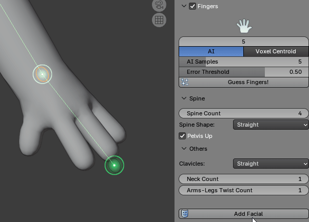
When fingers are disabled, the hand bone tail is now snapped to the hand_tip marker position
New Elbow marker to improve accuracy of the elbow recognition
AI: Elbow marker implemented in the AI models
UI: A large hand icon is displayed, showing how many fingers should be recognized
AI: Optimized fingers AI processing, from 1.5x speedup to more depending on the CPU.
AI 1.14: Enhanced AI models. Support for curled fingers has been improved.
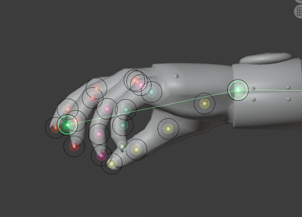
The neck height has been refined, it does not rely on the full body height anymore. It was not accurate with certain character designs (hat, bulky hair…)
New helper images to place the body markers
New helper images for optional markers
Ensure the character is properly framed once the “Go!” process has completed
AI: Improved correction of inverted knee direction, in case of extreme arched legs
AI: New 1.15 model versions
AI: Raised AI fingers samples to 10 by default for better results
AI: New 1.16 model versions
AI: New “Samples” setting to improve accuracy of body markers estimation
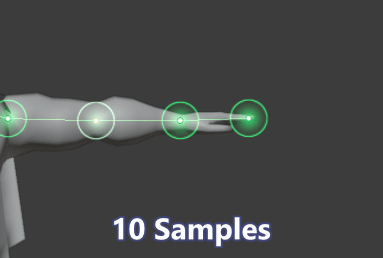
Rig:
New Muzzle controller (Limb Options), to offset the whole mouth plus nose optionally
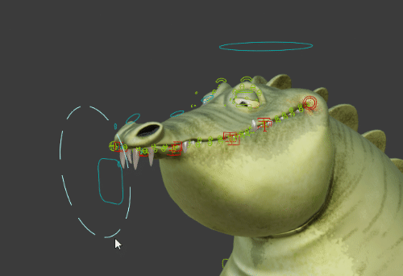
New “Set Custom Shape” function, to add a custom shape to a bone using the existing shape library (shapes located in Auto-Ruig Pro’s lib + current file). The custom shape scale can be set here too.
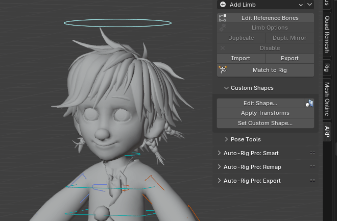
Init Scale: Do not require actions scaling if the rig is fresh new
Apply Pose as Rest Pose: Ensure new baked actions have fake user to avoid auto-deletion
Custom collections visibility is now preserved when Match to Rig
Show IK Directions: A point is now drawn at the expected IK pole position
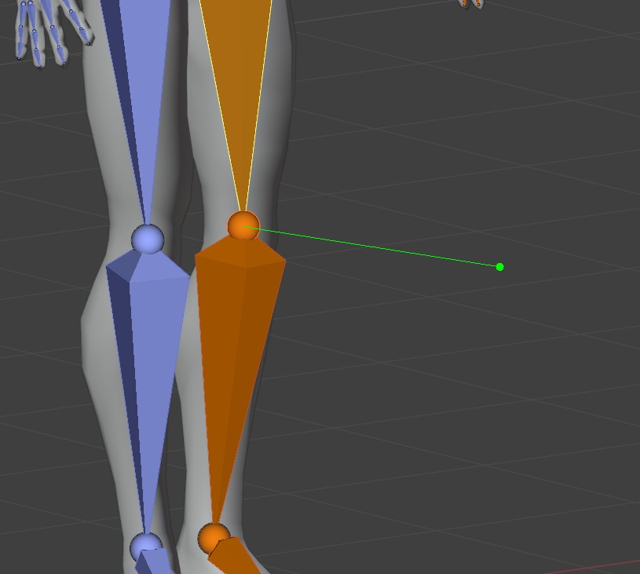
Display bendy-bones as is (Blender 4.5 and above)
New “Preserve Shape” option for Ear and Bendy-Bones limbs
Tail: Now supports custom names
A master Auto-Rig Pro armature collection can now be created when a name is defined in the addon preferences
Preferences: X-Ray/In Front display mode can now be enabled in the addon preferences
The fingers RotFromScale parameter is now limb level (arm), instead of object (full rig). Requires a rig update.
Mouth: Lips Amount can now be set to zero to remove all lips (jaw only)
Skin:
The feature that auto-updates arms and legs twist weights when changing Secondary Controllers, now supports the switch from/to Bendy-Bones secondaries. Multiple twist vertex groups are generated or merged together on the fly. Uses same functions as the Smooth Twist Weights feature.
Arm and leg twist weights are now automatically resampled on skinned vertices when Match to Rig, if the twist count has changed. This avoids to re-bind manually.
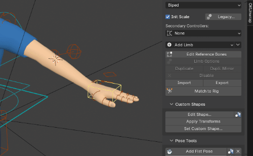
Twist weights resampling now handles cases where twist weights are not yet created. It generates twist weights out of stretch weights only
Export:
Unity: Convert Armature Axes is now enabled automatically when switching to Unity engine, to zero out the skeleton rotation
Add Dummy Mesh is enabled by default for Unity, otherwise Unity won’t import the root node when the file contains only animations
Do not export non-deforming kilt bones
GLTF: Exposed vertex colors settings
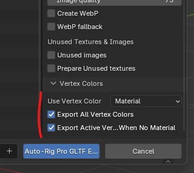
New Quick Export button to export with previous settings instantly, skipping the export menu.
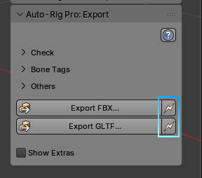
Remap:
Redefine Rest Pose: With “Preserve” disabled, all actions that are enabled in “Multiple Source Anims” are now baked with the new rest pose
Fixed
Smart:
AI: Support for ACES color profile
Fix phalanges with incorrect roll
AI: Ensure multi-view is turned off
Error when wrist detection is failing due to low-poly topology
Rig:
Apply Pose as Rest Pose: Error when Kilt limbs had more than one subdivision, while reference bones were not subdivided
jawbone_track bone not parented to c_skull_01
Tagged feather bones with a custom prop, was missing for Dupli Limb
Error handling when transferring vertex group with invalid ID
Error in leg_update_vgroups(), missing thigh_ref variable
Wrong leg dict called in parent_retarget()
Apply Pose as Rest Pose: Action slot not assigned automatically, leading to erroneous baking
Ensure eyelid controllers belong to the Secondary collection
Import Rig Data was always importing the limb options even if disabled
Removed superfluous body_mid collection created from preset files
The c_arm_twist_offset bone was missing the color group
Apply Pose as Rest Pose: Preserve Anim was missing support of ChildOf constraints
Renamed incorrect “c_” prefix for non-controller bones. A rig update must be performed on old rigs (click “Update Required” button)
Leg Options: The joint fans “Set” value was not saved properly (typo error)
Fist: Rot from Scale was no more supported with latest finger name changes
Foot bank/heel bones were no more aligned correctly with latest name changes
Apply Pose- Preserve Anim: Fingers Rot from Scale was not supported. Fixed, but scale keyframes are now reset to 1
RigTools:
Baking arm IK to FK was giving incorrect hand rotation. Error introduced recently, while snapping to the deforming bone. Now get the target bone rotation directly from the rotIK constraint
Multi-limb selection was not reset when baking FK > IK legs
Skin:
Error introduced in previous release, leading to missing vertex groups when binding (e.g heel vertices not bound)
Version:
Compatibility issue when assigning actions on old files, missing slots
Remap:
Ensure fingers are switched to FK, since IK is not supported
Clean FK Rotation was broken due to latest changes with multi selection mode
Some ARP controllers were erroneously skipped from the bones list such as c_foot_roll_cursor
Error when binding/unbinding, if the target armature had no animation data assigned yet
Build Bones List: Forearm bones not recognized automatically due to a logical pitfall
The bones diff matrix was not evaluated properly in case of non-normalized scale, resulting in wrong fingers retargeting when the RotFromScale setting was used
Export:
Children objects that were hidden were still exported, while the root hidden object is not
Always apply nodes and normals types modifiers, since Units x100 won’t comply otherwise
GLTF: One file per ActionList was not exporting actions
Humanoid: Syntax issue, wrong indentation that was leading to operate vertex groups modifications on non-skinned mesh as well
Corrupted vertex group index in set_humanoid and set_mped
Humanoid: Incorrect eyebrow bones parent when eyebrow masters were enabled
Check-Fix Rig: The stretch controller of 3 bones legs was not yet evaluated
Case where the rig is local, but a mesh parented to a bone is linked (override), was not properly supported, modifiers could not be applied
Misc:
Typo error in the properties registration
3.74
What’s new and improved
Rig:
Import-Export: The custom shape translation and rotation values are now exported and imported as Rig Data
Arm-Leg: A connection line is now drawn between the elbow-knee and the IK pole, as a visual helper. Can be disabled in Rig Main Properties menu (Show IK Pole Line)
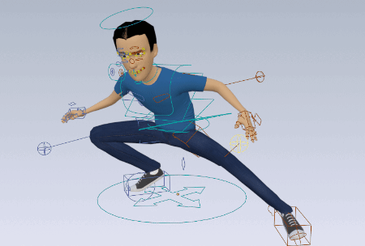
New Pivot controller in option for IK hand and IK foot, in order to rotate the hand/foot from a custom pivot point
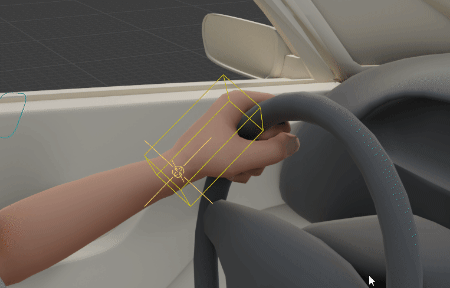
Custom Shape: Refactored the Apply Shape operator, using lower level functions to avoid errors related to broken hierarchy, collections
Fist Pose: A default fist pose can now be applied automatically as a basis
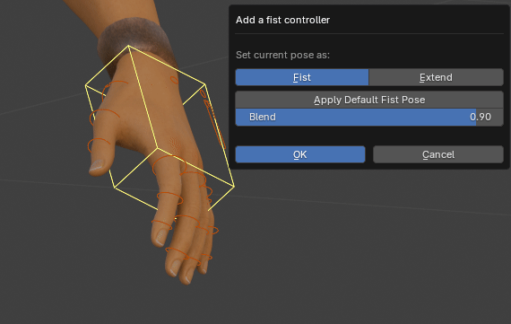
Fist Pose: The fist pose can now be edited easily after creation (similar to blink pose). It is no more necessary to reset the fist controller, more advanced ways to evaluate the bone matrices and applied constraints are now implemented
Blink Pose: An automatic blink pose can now be added as a basis, with upper eyelids snapping onto lower eyelids perfectly
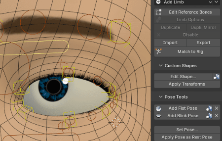
Blink Pose: Improved eyelid controller rotations when snapping
Blink Pose: Support for auto lower eyelids too
Leg: The upper thigh bone vertex groups are now updated automatically when switching 3 Bones Leg Type1/Type2, no more necessary to rename manually or re-bind
Leg: Rotation from Scale for toes in option, in order to rotate the toe phalanges when scaling the first one (similar to fingers)
New “Parent Fallback” setting for all limbs. By default, the root bone of a limb is parented to c_traj. If this fallback is left blank, no parent is assigned.
Kilt: Asymmetrical kilts support. “Side” setting in Limb Options: Symmetrical (.x, .l and .r bones), left (only .l), right (only .r) and center (only .x). Useful when setting up sleeves for example
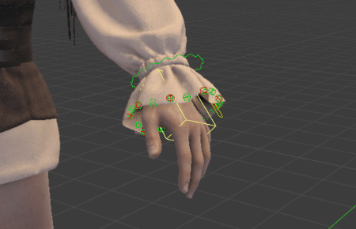
Removed Blender 4.4.0 debug procedures
Rig Tools:
Multi limbs selection support for arms and legs IK-FK bake
UI Cosmetic, packed some properties as stuck columns when they belong to the same group (stretch, 3 bones leg settings…)
ChildOf Switcher: The muted/disabled constraints are now filtered out
ChildOf Switcher: The active constraint is now removed from the list, since there is no reason to switch to it
Skin:
A warning message is displayed if numerous mesh islands are found (such as hair cards), while Split Parts is enabled, since Blender can freeze for a long time
Export:
New “Bones Tag Manager”, to add or remove tags to bones (custom bones, soft-link, constant) using lists
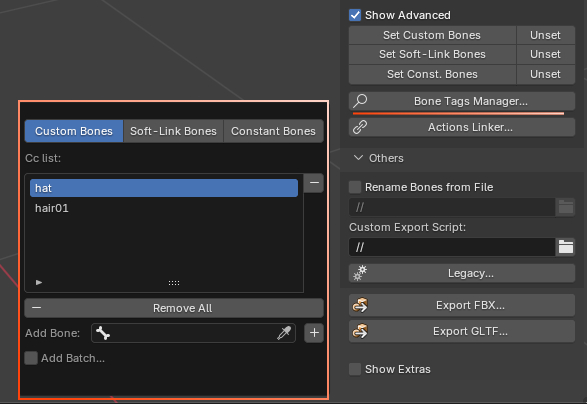
Refactor: Gathered all bones tag management code into a single call with different tags
UI: Revamped the export panel with tabs (Blender 4.1+ only) for clarity
Optimized the “Units x100” function, it was adding overhead in cases involving numerous actions (50+), even if they were not exported. With 150 actions in file and 6 exported, it now goes down from 80 seconds to 49 (x1.6 speedup)
New “One Folder per Actions List” parameter when exporting multiple FBX/GLTF files. If enabled, export animation files in a subfolder named as the Actions Lists. Instead of a checkbox, it is now an Enum parameter (One File per Action, One File per Actions List, One Folder per Actions List)
Added “Open Folder” button in the popup showing after export completion, to open the exported file folder
UI: Revamped the export window settings interface with tabs instead of box (Blender 4.1+ only) for clarity
GLTF: Exposed the materials export settings, ensure backward-compatibility with older Blender versions
Version: Initial support of slotted actions export (Blender 4.4+)
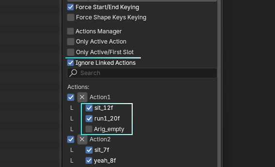
Actions List: New Actions List are now renamed automatically
GLTF: Slotted actions support
Custom script: Added the globals() argument when executing a custom script to allow list comprehensions and others
The “Add Dummy Mesh” option is now disabled by default, and “Force Rest Pose Export” is enabled by default. Latest UE versions automatically detect when the FBX contains only the skeleton, then it imports only the animation
“Initialize Armature Axes” was renamed to “Convert Axes: Y up, Z forw”, which is what it actually does. This setting is now only displayed when necessary (Unity and “Others” engines, and Godot if FBX)
GLTF: Humanoid skeletons can now be exported to UE as Mannequin/Manny/Quinns skeletons with GLTF too. Bone axes are now converted to comply with GLTF/UE standards. The root/c_traj export setting must be enabled.
GLTF: New Legacy option to export bone axes as FBX axes
GLTF: New setting to force export parent of deforming bones, when they don’t deform (similar to FBX)
Remap:
Added “Advanced Skeleton” preset
New Mirror function, to mirror automatically target bones in the list, from left to right or vice versa (naming based only). Supports various side identifiers (_L, .l…) nested as suffix, prefix or inside the name.
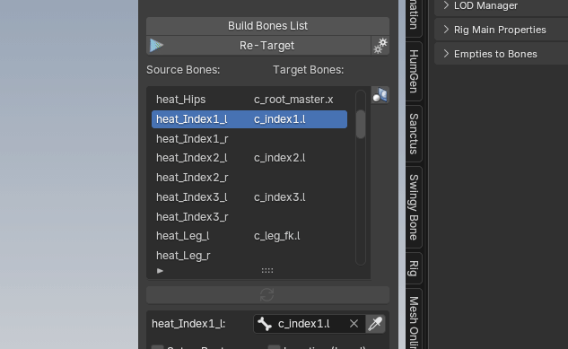
When building the bones list, duplicates are no more allowed since it is not supported
Non ARP controller bones are now excluded from the bones list
Preferences:
UI: Added expandable tabs (Rig, Interface, Paths…)
Skin: New toggle “Parent Objects when Binding” to prevent meshes to be parented to the armature when binding if necessary. Although this is not recommended to disable it, it may be useful in some custom workflows
Smart:
Mac: A compatibility warning is now shown when starting the Smart tool. To avoid crashes on Mac systems, tick the box to disable the Smart FX (green markers, lines)
Mac: If Smart FX are disabled, they are now replaced with static icons (empty images) to help visualizing the markers positions
New “Guess Markers” feature. Requires to install the “AI” files separately (see addon preferences, one zip file per distribution Win, Mac, Linux). A model file has been trained with deep learning, to recognize the main joints location on various characters. Only for symmetrical characters for now.
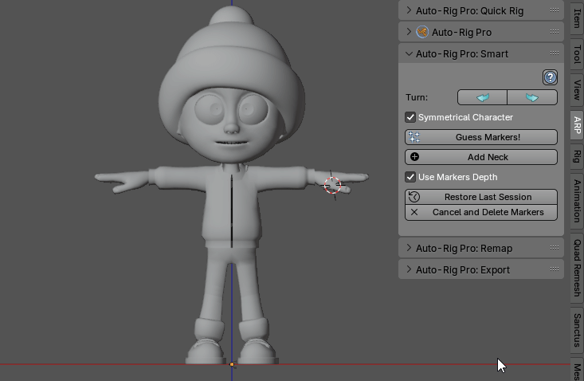
New “Guess Fingers” feature. A new “AI” engine has been added for fingers detection, along the old legacy one being “Voxel Centroid”. AI detection may still fail or lack accuracy in some cases, will be hopefully improved over time. AI fingers performs better than Voxel in case of complex intricated meshes such as robot, mechanical hands, but Voxel Centroid can output better results with slick, clean hand design.
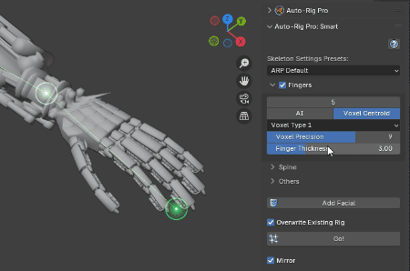
Fixed
Export:
The “File Names” parameter was accidentally greyed out, when “As Multiple Files” was enabled
Corrupted file path when the file name was blank, while exported one file per action with a name separator
GLTF: Incorrect shape keys animation export, due to the rig name being referenced accidentally with an “_arpbob” suffix (breakage due to recent fix in 3.73)
GLTF: The c_traj bone could export with incorrect rotations, since the transforms were not reset when looping through actions
GLTF: Typo error leading to crash the GLTF export, self.arp_ge_gltf_format instead of scn.arp_ge_gltf_format
Mac: Corrupted vertex groups pointers when transferring/creating weights. Work on a copy as a workaround
Incorrect meshes transforms when parented to bones, in non-relative parent mode, while the rig scale was not initialized
Error when exporting actions, while the rig has no action assigned at the time of the export
Some non selected actions could be exported anyway
The backward-compatibility routine for finger weights was not ensuring that the bone is not a custom bone
Blender 4.4 crash when updating the depsgraph in create_copies(). Avoid the deselect_all and set_active_object() as a workaround
GLTF: UE: Automatically disable root motion from the armature object node when exporting to UE as GLTF, since this is not supported (root motion is evaluated from the c_traj/root bone instead)
UE: Unexpected _basebone hierarchy exported in some cases
Some non selected actions could be exported anyway (2)
“Manual Frame Range” was not evaluated properly in Blender 4.4+ when exporting actions
Linked armatures with actions constraints were losing the linked action pointer. Make sure to restore them when making local copies.
Added a “Parent Fallback: c_traj” setting. It is recommended for GLTF export, but disabling it will match previous export behavior for FBX
Rig:
Add Blink Pose: The master controllers had incorrect blink pose rotation, due to Quaternion instead of Euler rotations
Updated preset files to latest version
Missing custom shapes from the master file. Custom shapes are now located in a separate “cs” file to avoid accidental removal
Mac: Appending the Bird armature throws an error, due to a None collection
Tools: Missing update trigger when snapping IK-FK, when no ChildOf constraint was found, leading to bad snap
Limb duplication issues: error when duplication limbs, missing bone drivers duplication, foot heel constraints inverted
More than 2 head limbs not aligning when Match to Rig
Update Armature: bone already in collection error
Foot fist mirror was not supported
Incorrect meshes transforms that are parented to bones, when performing “Match to Rig” while nit Scale” was enabled. Since ChildOf constraints (such as eye controller) are reset at the end of the process, it was necessary to re-parent meshes at the end too
Limb Options: The Soft IK LimitScale constraint was always generated, without checking if it was already there
Limb Options: The arm setting “Update Vertex Groups” was not saved
Limb Options: 3 Bones leg Type 1 was not enabling the c_thigh_b bone deform tag
Joint Fans shapes were not symmetrical
Custom shapes: Shape mirorring was not supporting extra transforms
Tools: Fingers IK-FK snap inaccurate pole position
Spline IK: Avoid crash in 4.4 by ensuring drivers are removed before the constraint
Backward-compatibility with Blender 3.6, the corrective bones collection only exists in latest Blender versions
Kilt: Symmetrical kilts were not 100% symmetrical when colliding with right and leg bones, due to incorrect Floor constraints evaluation order
A new pivot Copy Location constraint for hands and feet was always added when editing Limb Options
Debug cases where parallel vectors are evaluated in the signed_angle() function
Skin:
VHDS: Binding with X-Mirror enabled was forcing the bones transforms symmetry accidentally
Error with driver variables when translating the Blender interface to another language
Remap:
Error “arp_smart_markers_enable”
Error when freezing armatures due to missing self argument in init_arp_scale()
Actions not assigned to armatures properly in Blender 4.4+
Linux: Crash when Auto-Scale in Blender 4.4+
Smart:
Markers and connection line error, preventing display
‘ONLINE’ icon missing from pre-4.2 versions leading to empty Smart menu
‘Context missing active object’ error, when the fingers detection failed
Error when trying to unhide ghost objects (stored in the file data but not linked to any collections)
Error with unexpected View Transforms
Error with Facial Only, due to latest changes with the neck marker
Mac:
AI files permission issues
3.73
What’s new and improved
Version:
Compatibility: Blender 4.3: FBX export
Export:
New “Actions Linker” menu, to link an action to another one. Useful if exporting RigA animation, that depends on RigB through constraints (such as two characters holding each other’s hands). If animations are interdependent, it is necessary to declare these links for correct animation export.

New “One File per Actions List” setting, when enabling both “As Multiple Files” and “Actions Manager”. This allows to export one file per Action List, including all actions in the list.
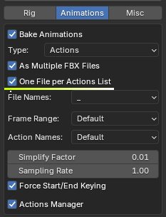
Godot: New setting to comply with Godot Root Motion axes
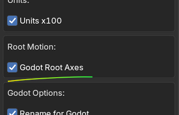
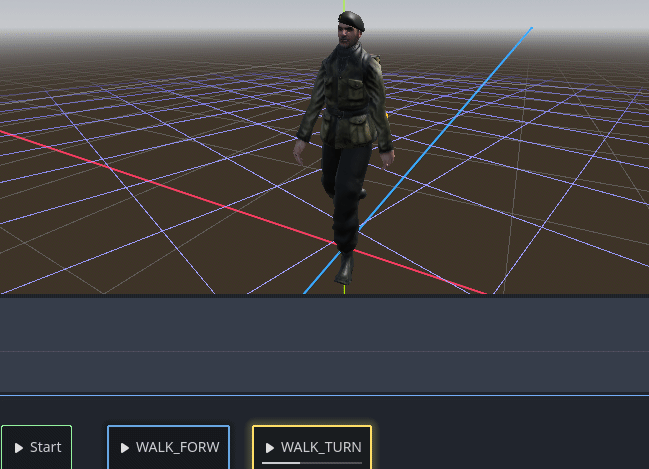
Godot: Removed the “Root Motion” setting that bakes the c_traj animation to armature object, not relevant for Godot Root Motion.
Actions Lists: Filtered actions in the actions selector, so that actions that are already part of the current list are removed from the search list
GLTF: Exposed the “Start from frame 0” setting, in order to force the first frame of each action to be zero if enabled
UE: Removed the extra orientation tweaks applied to the spine bones when exporting with Mannequin axes. It was offsetting the angles by a few degrees to improve the match in case of straight spine bones, but can be misleading. It is best to align the spine bones manually. It can still be enabled in the “Legacy” menu though.
Actions Manager: New “Batch” feature to add multiple actions at once to a list, with filtering
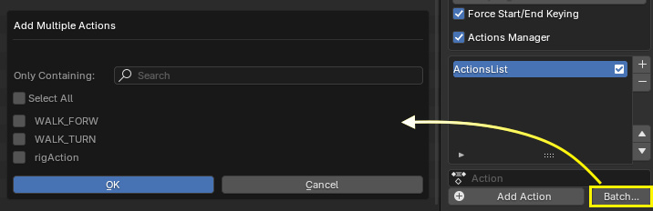
UI: Added the “Rename Bones from File” checkbox in the properties panel too. Was confusing to have it only in the menu located in file export browser
Avoid operator when removing shape keys for faster performances
FBX: New “Force Shape Keys Keying” setting. If disabled (default), non-driven or non-animated shape keys are now exported as static, without animation data
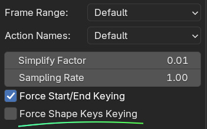
Rig:
Spline IK: Changed “Parent External Bone to” setting, was limited to the tip bone before. Now applies to all bones of the chain, and to Deforming or Twist bones instead of controllers. Can still be parented to controllers if necessary, by directly parenting Spline reference bones to them.
Spline IK: New “Add Tail Bone” option. This adds an extra bone at the tip of the chain, that is not part of the main IK chain. Useful when needing to parent other limb to the tip, that must not be stretched or rotated with the main chain, such as rigging a spine for quadrupeds.
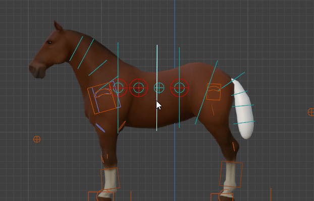
Spine, Tail, Spline IK: New “Preserve Shape” option, to preserve the current shape when changing the amount of bones.
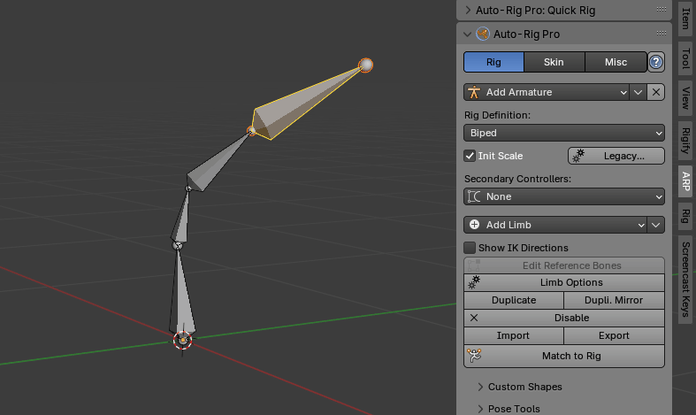
Spine, Tail, Spline IK: Removed “Update Transform” option, was confusing. Now, automatically update the bones transforms if the count was changed, using grid align or preserve shape if enabled.
New Bulge setting for arm Joint Fans, allowing to add extra bulge deformation when the fans are spreading/folding. The created constraint can be manually edited afterwards.
Apply Pose as Rest Pose: New “Apply Deformed Shape Keys” toggle, can be useful to speed up baking time in case deformations are not affecting shape keys
New Bulge setting for leg Joints Fans too
New Ankle Joints Fans
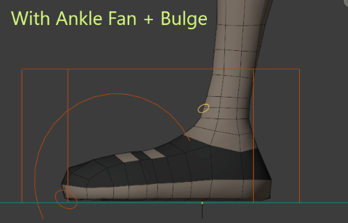
Leg: New “Foot Roll Break” option. If enabled, the foot will start rotating from the ball, then from the tip toes, when moving the foot roll cursor. Settings can be found in “Rig Main Properties”.

Skin:
Warning message in case of negative mesh scale when binding
Picker:
The picker camera is now set automatically when clicking “Add Picker”
Support reverse spine bones
Rig Tools:
New “Extract Root Motion” function that tracks and bakes the “c_traj” controller to the pelvis position, while maintaining it on the floor, and preserving the rig animation


Extract Root Motion now supports Location Z with initial offset applied
Improved Extract Root Motion performances, around 4x faster (before: 24 sec for 400 frames, after: 6 sec)
Extract Root Motion: Added X and Y offsets
Remap:
Added “Extract Root Motion” as an option when retargetting
Smart:
Facial features are now togglable: Eyebrows, Eyes, Ears, Nose, Lips, Tongue, Teeth, Chin
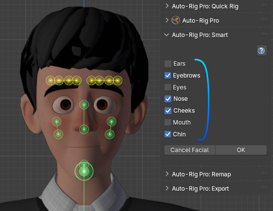
Auto filter mesh objects when clicking “Get Selected Objects”. This avoids throwing an error if non-mesh objects are selected.
UI: Moved the “Fingers” checkbox in the header of the Fingers tab to minimize redundancy
Fixed
Rig:
The horse rig was containing unwanted actions data leftovers
Removed the “body_mid” collections coming from old armature presets
Facial: Error when disabling the mouth bones
Bottom bones had accidentally their Deform property turned off
Apply Pose as Rest Pose crashing in case of numerous shape keys
The Tail limb could have incorrect parent. No uses the default parent_retarget function
The Dog preset had a “Connected” second spine bone, leading ot issue
Thigh Joint Fans incorrectly parented to 3 Bones Leg Type 2
Custom shapes of reversed spine controllers could be offset
Kilt: When changing the amount of bones, the Z axis could be incorrectly oriented. Now calculates the curve normal vectors to align Z axes on.
Changed the arm, leg Stretch-Length minimum value to 0.1
Fixed the new Ankle Joint Fans bulge, was not evaluating the foot angle correctly, new helper foot bone added
Apply Pose as Rest Pose: Arm and leg stretch controller was not supported
Error when setting up secondary bones color group in pre-Blender 4 versions
Disabled “Extrapolate” from the c_foot_heel bone and cleared out of range mapping to avoid accidental rotation flip
X-Mirror was getting disabled when editing Limb Options
Bad alignment of Kilt control bones, due to incorrect variable name
Custom shapes were shared between rigs, when rigging multiple characters per file, leading to issues. Now, custom shapes are localized per rig.
Skin:
Error when restoring current vertices weights if a temp object was deleted (Apply Shape Keys)
Export:
Skinned objects having same name as export skeleton were clashing. It now throws a warning before exporting.
Add batch actions to Action Manager could generate an error if an action was removed from file
GLTF: Disabled the “export_apply” argument from the actual export, was preventing shape keys to export. Modifiers are pre-applied by AutoRigPro functions anyway, so no changes on the user side.
Error when exporting actions list containing removed actions
The exported skeleton was incorrectly named with an “_arpbob” suffix when the rig export name was the same as the armature name
Apply Shape Keys was failing if the basis shape key was not named “Basis”. Now, always refer to the shape key at index 0 as Basis
Humanoid: Invalid fingers export when exporting more than 2 arms
Shape keys could not apply and export correctly under certain circumstances, was missing “from_mix” set to false
GLTF: Apply Modifiers was failing
Displace modifiers were not scaled when exporting with Units x100
Missing compatibility of the new “Force Shape Keys Keying” in older FBX exporter (prior 4.1)
Rig Tools:
Extract Root Motion quat_prev error
Spline IK: Error when snapping IK-FK with AutoKey enabled
Smart:
The arm/leg reference bones roll was not calculated. Was expecting the Match to Rig function to do it, but now that “Auto IK Roll” can be disabled, the roll must be aligned
Remap:
Added further checks to evaluate if the source and target armature are really Armature objects, to avoid user error
Ensure that the side word identifier of source and target bones does match when generating the bones list
3.72
What’s new and improved
Version:
Blender 4.2 Extension compatibility
Rig:
Facial: New “Use Translation to Rotate Jaw” toggle in Limb Options, to rotate the jaw instead of translating by default
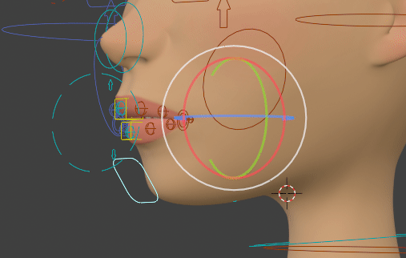
Custom Shapes: New “Apply Transforms” to apply/zero-out the per-bone custom shapes extra transforms (loc, rot, scale)
Warning, spine breaking update. Cleared inconsistencies in the spine bones hierarchy and deform settings, regarding _bend and _base spine bones with Secondary Controllers set to “Twist”. It is now fixed but can alter existing animations and skinning. This change was unfortunately required to fix inconsistencies and further develop the spine rig.
Spine _bend controllers are now white by default
New Reversed spine setting in the spine Limb Options. Reversed spine is useful to rotate the spine hierarchy from the chest, instead of the pelvis.
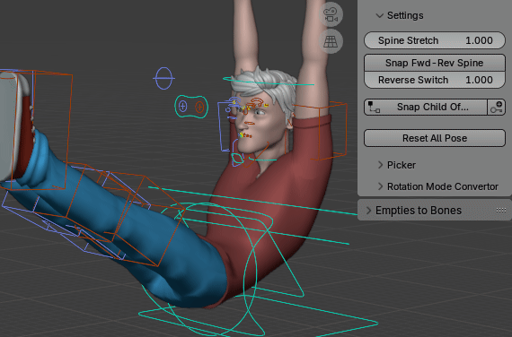
New “Align Bend Controllers” parameter in the spine Limb Options. Useful to manually tweak the c_spine_bend controllers after Match to Rig, in Edit Mode
UI: Arm and Leg Limb Options have now tabs at the top of the menu, for clarity
Fingers: Independent Pinky finger in Limb Options, so that the pinky metacarpal can be rotated without dragging other fingers (pinky auto)
Fingers: Revised the pinky auto feature, so that the constraint influence is properly spread among fingers, if middle or ring fingers are missing
Fingers: IK Poles are now parented to the IK target by default (“Tip Ctrl”)
Toes: New IK parent and shape settings in Limb Options, similar to fingers
UI: Spline IK Limb Options now have tabs (Main, Relations…)
Spline IK: The scale space of masters controllers is now an option, can either inherit the main stretch bone scale, or c_spline_root scale
Skin:
A warning message is displayed if mesh objects have non-zeroed out Delta Transforms values.
New “Update Vertex Groups” setting in Limb Options of spine, arm and leg limbs. This avoids the tedious re-binding phase when changing only Secondary Controllers
Addon:
Changed the addon category from “Animation” to “Rigging”
Preferences are now saved to an external file when clicking the “Save Preferences” button in the addon preferences. Then they are automatically restored when installing a new version of the addon.
Remap:
New “Only Containing” text box when remapping multiple animations, to filter actions containing only the given keywords
UI: Moved Location button next to “Set as Root”, and hide IK settings when not enabled
Copy Frame Range and Cyclic settings from the source action to the remapped action
New Import and Export functions in the multiple actions menu
Multiple Anims: Moved Import and Export buttons at the top, and removed OK and Cancel buttons that were useless here, avoiding to scroll down in case of numerous actions
Multiple Anims: Remapped actions are no more remappable by default
Rig Tools:
Rig Layers: Bones part of the current set can now be displayed in the interface by clicking the eye icon button
Make sure to keyframe even locked axes of forearm FK and leg FK bones when baking
Spline IK-FK Baking support
Optimized IK-FK arm baking performance, the loop was erroneously iterating more than necessary over the arm bones
New “Time” button in the bake menus, to set global current action frame range
Spline IK-FK snapping has been improved with an algorithm that refines iteratively the IK to FK chain snap. More settings to fine-tune the snap function. Warning, snapping while stretching the Spline is still not properly supported due to the complexity of the Spline IK behavior and rig
IK-FK snap operator now supports all selected bones
Export:
The “Only Containing” setting was replaced with a single search box to simplify, and the eye icon to show exportable actions was removed, since it was not relevant
A Spline IK limb replacing a Spine limb is now supported in Humanoid export. The root/pelvis spine bone is still required though, the Spline IK should be parented to it.
Smart:
Ears can now be disabled from facial markers
Fixed
Addon:
Check for Update: compatibility issues with 4.2
Check for Update: could not get the correct addon version
Export:
FBX: compatibility issue with 4.2
Saving presets returns an error when an action is not found in the Action List
Spline IK curves visible after exporting
Spine bones exporting incorrectly since latest changes
Spine bones exporting incorrect skinning since latest changes
Quick Rig Preserve skeleton were not properly supported when exporting multiple actions
Error when no active actions were found, while still trying to bake because of a Quick Rig Preserve skeleton
Quick Rig Preserve skeleton scale issue, when the skeleton had keyframed non zero-out scale values
Solidify thickness was incorrectly scaled when enabling Units x100
Rig:
Error “key eyelid_amounts not found” when Match to Rig, when setting up the facial rig only with Smart
Error in restore_pose() when restoring the custom property value of Group ID Properties
Error when setting one eyelid bone
Error with older rigs/presets having no “eyelids_amount” property
The new spine count setting per limb was missing limits (1-64)
Error when disabling facial via the “Disable” button instead of Limb Options
Error when applying the rest pose, while some skinned meshes are not in current view layer
The Color Theme was missing some bones that were not belonging to the color collections
Duplicating or mirroring limbs was not duplicating the related drivers
3 Bones Leg parent not set correctly
Rig Tools:
Error when baking IK-FK leg
Mac:
Error when loading custom icons under certain circumstances. Skip custom icons if they cannot be loaded.
Remap:
Error with Clean FK Rotations
Incorrect frame range printed in the Blender console when remapping multiple animations
Smart:
Error when ears are disabled, and ears markers are out of the mesh surface
3.71
What’s new and improved
Rig:
New 3 Bones Leg Type 2 setting (old default one is Type 1). This is a complete revised version of the 3 bones leg, with an IK rotation controller at the calf joint, and extra stretch controller for the upper thigh.

“_bend” secondary controllers are now white color by default
“Set Character Name” now also renames the cs_grp empty object
Edit Ref Bones/Match to Rig now preserve the visibility of user-added collections
Multiple Spine limbs are now supported
Kilt limbs support in “Apply Pose as Rest Pose”
Facial: New “Linear Y” and “Linear Z” settings in Limb Options, to better define for each axis the shape of the lips when moving the corner controller (was a single value driving all axes before). Plus, to fine-tweak the result, individual custom properties located on the lips reference bones can be adjusted: “linear_Y” and “linear_Z”.
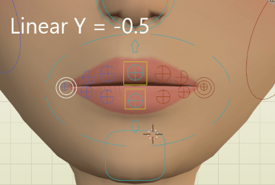
Facial: The “Linear (Corners)” and “Linear (Jaw)” parameters in Limb Options now support negative values, allowing even more curved interpolation
Facial: New “Soft” setting for eyebrows. This allows to deform smoothly the eybrows when moving the c_eyebrow_full “controller”.

Facial: New “Masters” setting for eyebrows. This adds 2 master controllers at the root and tip of the eyebrow, to adjust the global shape of the eyebrow quickly
UI: Since the facial Limb Options panel was getting over-populated, it has been redesigned with tabs to display Eyes, Mouth, and Others settings only.
New “IK Pole Height” setting for 3 Bones Legs. Setting it to 0.0 allows backward-compat. with older versions
Facial: New eyelid masters in option (Limb options). Useful to tweak numerous eyelid bones at once. Complies with the Blink Pose and export tools.
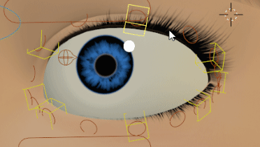
Skin:
Shape Keys can now be evaluated in their current state when binding
Remap:
New Heat preset
Export:
New actions are now exportable by default
“Custom Export Scripts” can now be embedded in the Blender file (text editor)
Vertex Colors: New “Prioritze Active Color” setting
New “Ignore Linked Actions” setting to prevent linked actions from exporting
When shape keys cannot be baked because of a modifier altering the vertex count, a message now reports it after exporting
Preferences:
The default paths of custom Armatures, Limbs, Rig Layers… are now set to User/Documents/AutoRigPro
Picker:
Major speed improvement when selecting a picker bone. There was overhead in the bone selection/ armature collection management, it has been refactored. Selecting a bone from the picker is now almost instant, while it could take up to one second before.
Multiple eyelid bones and eyelid masters are now supported in the picker panel
Multiple lip bones and lip masters are now supported in the picker panel
Fixed
Rig:
“Apply Pose as Rest Pose” was missing support for Bendy-Bones limbs
Missing toes activation in Limb Options when adding a leg limb
Missing constraints removal when unsetting “Spine Master Controller”
Error when disabling eyebrows
Facial: Error with soft-lips “Visual Only”
3 Bones Leg Type 2 returning layer error in Blender pre 4x versions
Rig Tools:
Invalid 3 Bones Leg Type 1 FK to IK baking
Invalid 3 Bones Leg Type 1 IK to FK baking
Smart:
Error when a 2-spine bones armature was already existing in the scene
Export:
The spine bones amount was not evaluated properly when exporting as a humanoid, since the spine limb is now a duplicable limb
UE: The “joints fans” were preventing to export a valid hierarchy when enabling Mannequin Axes
Error when exporting spine limbs in Universal mode
The dummy mesh could not export anymore, the view_layer update needed to be triggered manually
Linked actions were localized accidentally in the file
Spine bone error when exporting as a Humanoid, and missing spine animation/constraints when exporting as Universal
“Prioritze Active Color” were not compatible with Blender versions pre 4.1
Skin:
Smooth Twist Weights was not working with pre-3.6 Blender versions
3.70
What’s new and improved
Version:
4.1: Armature collections API updated
4.1: Since message box operators now include a “Cancel” button, use the direct popup message function instead, when “OK”/”Cancel” button are superfluous
4.1: Ported the whole ARP FBX exporter to the latest Blender’s FBX exporter, since mesh normals are exported with new settings in 4.1. To maintain backward-compatibility, the old version of the ARP FBX exporter is run on older Blender versions
4.1: Added an “internal” collection, as parent of the mch_ internal collections and body color groups. Collections are sorted when Match to Rig.
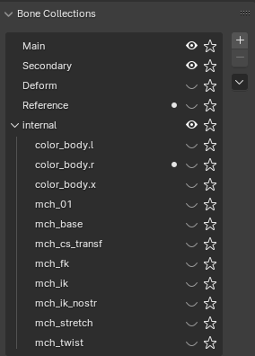
Interface:
New help buttons that link to the documentation in the rig, smart, remap, export menus. Can be disabled from the addon preferences.
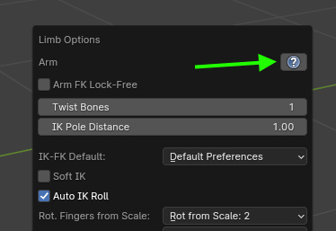
Rig:
Spline IK: New Twist target setting in option. Useful when rigging long necks with Spline IK limbs. A target bone must be defined to evaluate the twist rotation from.
Spline IK: New “Parent External Bone” setting, in order to define what bone an external limb must be parented to: the deforming tip bone, or the control tip bone. For example, if the neck ref bone is parented to the tip ref bone of the Spline IK limb, it is recommended to set it to “Tip Deform” for a correct behavior, so that the neck bone remains attached to the actual deforming spline bone.

Facial: New “Unlock Jaw Y Loc” setting, to allow jaw translation along the Y axis
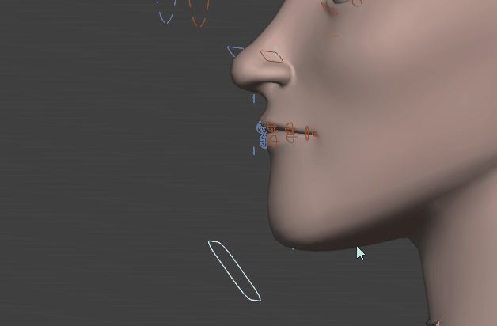
The Import and Export features can now handle Limb Options. Useful when needing to backup rig data.
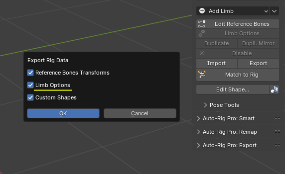
New mirror feature for the “Add Hand Fist” tool
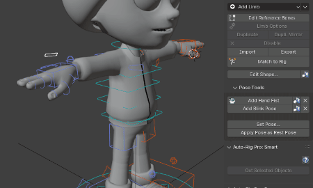
New mirror feature for the “Add Blink Pose” tool
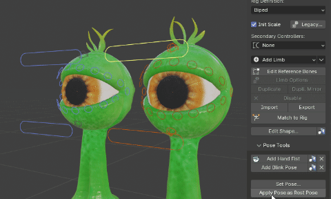
Rig Tools:
Head Lock now supports Bake
Arm Lock now supports Snap and Bake
Thigh Lock now supports Snap and Bake
Pole Parent now supports Bake
Default frame start/end of bake operators are now set to the scene or preview range
(Performance) The bake operators do not work with Auto-Key anymore. It is now turned off internally for performance reasons, such as the Motion Paths evaluation
Skin:
The “Smooth Twist Weights” setting now supports multiple twist bones, was limited to 1 twist bone before
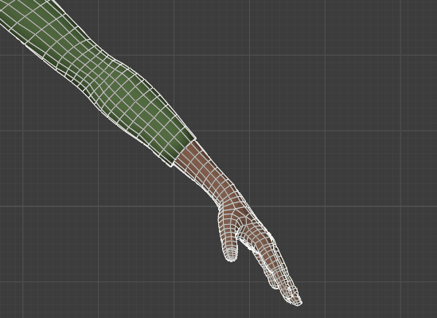
Remap:
New Mocopi preset
Export:
Renaming bones from file now supports Blender’s internal text files too (thanks to Greisane for the patch)
GLTF: Custom properties located on actions and pose bones are now exported
FBX: Custom properties located on pose bones are now exported
Preserve hierarchy when objects deformed by armature modifiers are parented to other deformed objects
UI: Removed Auto-Rig Pro specific params from the UI when exporting a custom armature (twist export, c_traj export…)
Smart:
The elbow position is now set more accurately, supporting non-straight arms
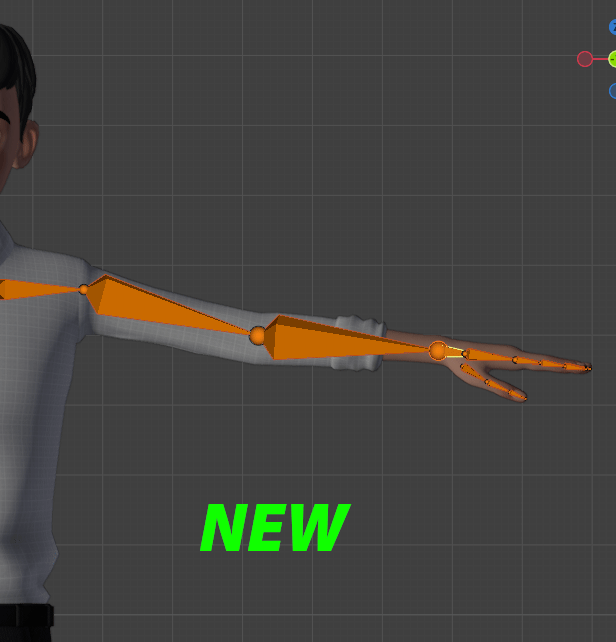
New settings to define the spine curvature: “Straight” for straight spine, “Model Fit” to fit the actual model shape, “Arched (UE)” to fit the UE5 Mannequin spine.
When setting the spine count higher than 3, the spine curvature is now maintained in “Model Fit” and “Arched” mode. Spine bones were always straight before.
New settings to define the clavicles alignment, to better fit the UE Mannequin.
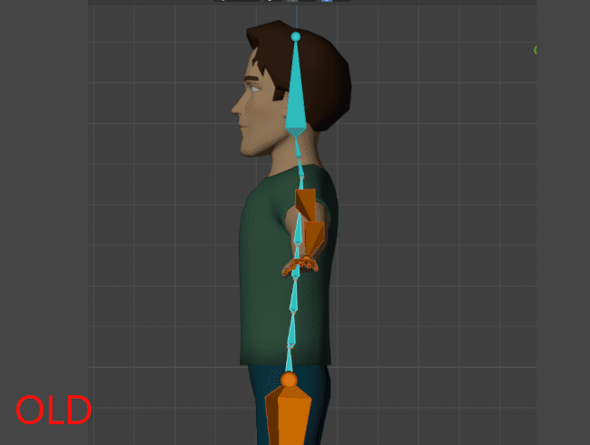
UI: Collapsable menus (Blender 4.1+ only)
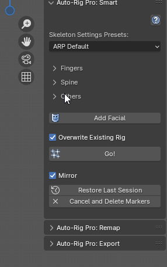
Fixed
Rig Tools:
API: The operator arp.convert_rot_mode() had wrong default values
Motion Trails evaluation + Animated Rig Layers was failing to update. A picky condition has been added to update the collection visibility only when necessary
Rig:
Rig: “Show IK Directions” was not drawing the line when selecting only the head or tail of a bone
Export:
FBX: Error with the new “argument mesh_names_data” when using Blender 4.0
Incorrect mannequin bones axes in some cases
Error when exporting linked actions in Blende 4.1
GLTF: Missing arm and leg bones when exporting as a humanoid with Twist Secondaries
custom_collection type error in sort_armature_collections()
Invalid mesh data export when Triangulate was enabled, due to mesh renaming issues
Exclude objects from export, that are located in external view layers, since these are unaccessible data.
Animated shape keys not exporting to GLTF with linked rigs
Animated shape keys not exporting to GLTF with non-linked rigs. Fixing previous commit.
Remap:
Incorrect retargetting if arms or legs bones were set with the “Lock-Free” option
Rig:
Re-initialized bones color groups from armature presets, as a workaround for the invisible stick bones
Limb Export: Pose bone properties were not exported for all bones
Sorting alphabetically the internal collections under Blender 4.1+ was leading to error in case custom collections were added by users
“Apply Pose as Rest Pose” was missing support for Spline IK limbs
Bones collection displayed as “exclusive” (Blender 4.1+, star icon) was interfering when cliking Edit Reference Bones, or other buttons. Exclusive display is now disabled automatically
The Mirror Blink Pose function was missing the eyelid tweak controller
Smart:
Visibility states of hidden objects was not restored properly after the detection
3.69
What’s new and improved
Version:
Upgraded the whole code base to Blender 4.0, with armature collections support. Make sure to click “Update Armature” when opening rigs from older versions
Because Blender 4 removed the extra frame added at the end of actions frame range, added a new Legacy setting to back up this additional frame
Blender 4 does not handle properly the double IK fingers constraints, leads to cyclic dependency (wobbly bones effect). Then, unfortunately the second IK at the tip of the fingers had to be removed. Click “Update Armature” when opening old rigs with IK fingers. Note, this second IK constraint could be restored later, will require more advanced bones mechanics to avoid the cyclic dependency.
Interface:
New “?” button in the Limb Option panel, that opens the documentation page (internet) of the selected limb when clicked.
Renamed the UI panel “Bone Custom Props” to “Bone Properties”
Export:
New Presets feature, to save and load export settings quickly
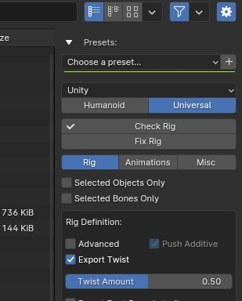
FBX: Expose the “Force Start/End Keyframe”
Clean up of the humanoid UE skeleton collections
The Fbx and Gltf export operators were renamed, leading to change the script snippets in the documentation. Old name: “id.arp_export_fbx_panel”, New: “arp.arp_export_fbx_panel”
FBX: Exposed the Vertex Color space setting
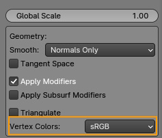
Mesh to mesh parenting is now preserved when exporting, and non-skinned children meshes parented to skinned meshes are exported as well
Bones animations can now be exported with constant keyframe interpolation, using the “Set Const. Bones” button. Applies to all keyframes, all actions of given bones. Todo later: fine-tuning, in order to export only specific keyframes as constant.

Added effective export time in the popup notification after export
Humanoid export now supports more than 2 arms and feathers
Menu to remove export presets (X button next to +)
Rig:
The selected armature can now be saved as a custom preset automatically (it was already possible to add custom presets before, but the preset files had to created and put in the folder manually)
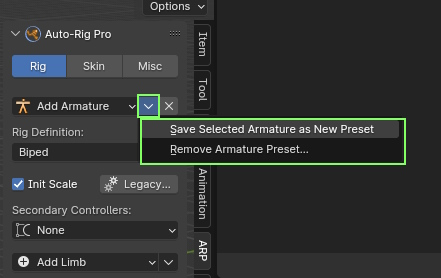
The custom presets armatures can be removed using a dedicated menu
Facial options: Slight change in the behavior of “Update Transforms” for eyelids. Now, eyelid bones are aligned automatically in a circular shape only if the amount was changed and this setting is turned on. Before, they were always aligned if the amount was changed, regardless of this setting.
Spline IK: New FK mode (Limb Options). Generate master FK controllers every Nth bones, by default locked to the IK masters amount for correct IK-FK snap.
Spline IK: IK-FK switch and snap (Rig Main Properties). IK to FK snapping is accurate, but FK to IK is not by nature: compensating the smooth curve interpolation between control points is quite a technical challenge, to improve later if possible.

Spline IK: New “Update Vertex Groups Name” setting (Limb Options). If enabled, automatically renames the vertex groups of the deformed meshes, according to the latest changes in Spline IK Limb Options.
Armature Presets: Custom armature presets can now be stored in an external folder, as set in the addon preferences. Armature libraries can be added into this external folder, making it independent from the addon installation folder (custom armatures will not be deleted anymore when updating the addon). Custom presets files stored in the addon folder still remain.
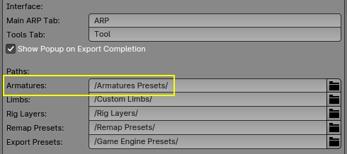
Blink Pose: When removing the blink pose, a menu now prompts to remove the whole blink pose, or only in-between poses
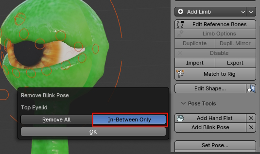
New “Joints Fans” bones, for optimal volume preservation of elbows, wrists and thigh and knees. Useful when exporting, if skinning’s Preserve Volume is disabled. From 0 to 32 bones can be set in Limb Options.
The “Reset All Pose” button is now displayed even if no bones are selected
New Toes Metatarsal bones (Limb Options), can be parented to foot instead of the main toe bone.
New Toes IK-FK (Limb Options). IK-FK switch and snap, IK Direction inversion, for all or selected fingers. Automatic renaming of vertex groups when enabling/disabling IK-FK bones in Limb Options.

New IK hand offset controller (Limb Options)
Fixed
Export:
Error when actions contained a single frame only
Scene Units set to None was crashing the export
Actions with no “id_root” attributes were not exported
Wrong mannequin bones axes orientation, because of hidden bones collections
Shape keys animation as an NLA track did not export with “Apply Modifiers” setting enabled
Error when exporting IK Splines with Blender 4
Crash when no deforming bones are selected, while “Only Selected Bones” is enabled
The “Set Universal Rig” function was missing custom script execution
The Set/Unset export rig function could remove vertex groups when unsetting, if the vertex groups were not assigned to any vertices
“Export Root Bone (c_traj)” was not working in Universal type
Fbx export crashing when exporting UVs with non zeroed out mapping rotation
Metacarpal finger bones were always exported even if “Selected Bones Only” was enabled
Error when exporting a custom armature with a bone named “root.x”
Remap:
Fixed unreported bug with collection visibility
Version:
“Show IK Direction” line broken in Blender 4
“Update Armature” was not removing the second IK fingers constraint when the rig was already updated to Blender 4
Move constraints operator broken in Blender 4, use lower level functions instead
Some users report error when importing the Requests module (chardet import error), use urllib instead
Rig:
Ensure bones custom shapes are assigned to the cs collection and parented to cs_grp
Layers: Error (in console) when updating layers visibility while nothing is selected
Disable fingers Rot From Scale broken in Blender 4
Control and reference lips bones had incorrect colors in Edit mode
Error with Kilt limbs and single colliding leg
The Kilt custom shapes were removed when editing more than one Kilt limb
New eyelid bones had no color
Legs IK poles roll was not aligned when Match to Rig. Added a Legacy setting for backward-compatibility
In Secondary Controller:Twist mode, the forearm twist bone was missing an offset bone, leading to scale the transforms.
Edit Shape: Editing the bone custom shape now supports the additional transforms settings available in Blender 3 and above
Fix Bendy-Bones limb alignment throwing an error because incorrect bone side was evaluated
Incorrect fingers rotations when adding rig fist
Error when setting the leg IK offset
Smart:
Error when removing an optional facial object from the detection
Error if facial objects are not assigned to any view layers
Removed any dead BGL call for MacOS compatibility
Skin:
Bind crashing when an eye object was defined in Facial Features, but no eye bones found
CheckForUpdate: urllib request module import broken in latest python versions Installation: Armature presets path crashing the addon install if the path does not exist yet
3.68
What’s new and improved
Code structure:
Refactored code to clearly state licensing, “src” folder containing GPL python files, Royalty Free and CC0 for other asset blend files
Rig:
New leg FK lock setting, similar to arms FK lock
When binding, removal of existing vertex groups can now be disabled as a default preference. A warning message is displayed at the first bind
New “Remove Selected Driver” function to remove the corrective driver of the selected shape key, deletes the helper bone as well
When initializing the armature scale during Match to Rig, the animations can now be scale compensated automatically. A dialog box prompts the user to enable scale compensation or not
Cosmetic, brought back some colorful icons from Blender 2.79!
The ChildOf constraints keyframes now works with multiple selected bones
Master constraints for Tail limbs now works with “Before Original” mix mode to avoid rotation/gimbal issues
Additional jawbone setup to support head stretch. Old armatures can be updated with the “Update Armature” button to retrofit
The lips corner mini bone was not deforming by default, while c_lips_smile was. Switched both, since direct skinning for c_lips_corner_mini is preferred over shape keys
Add basic support for bendy-bones for the Tail limb (Limb Options)
Add lips offset controller, to move all lips bones at once (Limb Options)

New Kilt limb to rig dresses, kilts, skirts. Constrained collisions (no dynamic simulations)
New “All Keyframes” setting in Bake IK-FK functions, to bake all keyframes or only existing keyframes
New “All Keyframes” setting in Snap Child Of… function to bake only existing keyframes when disabled
Extended the Spine Count max value to 64
Picker:
Show a warning if the picker addon is not installed (Misc tab)
Picker: The picker title is now renamed automatically when setting the character name with “Set Character Name”
Remap:
New “Clean FK Rotation” when retargetting, to ensure single axis rotations on forearm and leg FK controllers
New MB Lab preset
New “Clean IK Poles” setting when retargetting. It used to be always enabled internally but could lead to issues. Now disabled by default.
Code refactoring to support non-latin bone names (japanese, chinese…). Require to click the “Update” button when prompted, when opening older files.
Support for bones with the setting “Inherit Rotation” disabled
Skin:
When binding, used vertex groups are now also searched in geometry nodes attributes, to exclude them from removal
If binding fails because of scale issue, a popup message now proposes to rebind with Scale Fix enabled automatically
Added tongue and teeth as automatic facial skinned feature (was eyeballs only so far)
The toes deforming bone now exactly matches the length of the reference toes bone, for more accurate automatic skinning
Smart:
Tongue and teeth objects can now be Smart detected for more accurate bone placement
Cosmetic, new markers icons, also fixing OpenGL error message on MacOS
The armature is now tagged in order to evaluate if “Match to Rig” has been performed before binding or exporting, to prevent user errors
Facial markers are now drawn as colored circles and colored lines
Export:
Added triangulation for Fbx export
Colorful icons from Blender 2.79 for export buttons
Lengthy object names were not supported at export time, now throws an error message if names are exceeding 56 characters
New “Sampling Rate” setting to bake animation subframes when the value is below 1.0
Since Tangent Space normal export does not comply with N-gons, send an error message if N-gons are found and prevent Fbx export
Since Soft IK is not Fbx export friendly because of the constant slight leg/arm stretch, added to “Check Rig” warnings
Updated the Fbx export trunk with latest Blender official Fbx export (support new vertex color attributes for Blender 3.2 and greater)
Added “Others” in the export engine interface, along Unity and Unreal Engine. Selecting it will hide settings specific to Unity and UE. Useful when exporting to Godot for example.
Popup message to notify the export is complete (can be disabled in the User Preferences)
Added “Metacarpal Fingers” setting in the Humanoid type, when exporting as “Others” skeleton
Interface:
The “Mirror Shape Keys” button was moved to the Shape Keys dropdown menu, and renamed “Mirror All Shape Keys”
Aligned the checkboxes of actions list (export, rig, remap) on the left for clarity, and display the true prop checkbox for convenience, if Blender greater than 3.5
Check for update:
Now shows a differential log, comparing the log of the new available version versus the current old version
Fixed
Rig:
Spine reference bones had incorrectly more than one bbone segment, leading to error when keyframing the whole character
Add Blink Pose was not resetting bones transform properly after adding the constraint
IK-FK snap invalid vector angle error
The Lite version menu was kept hidden
Removed the extra blank NLA track that was left in the armature presets data. Was interfering with NLA tracks in linked files
Since the head stretch support update, the jaw was not rotating anymore because of a missing bone when loading the mouth bones
Incorrect renaming of new Tail, Bendy-Bones and Spline IK limbs if an existing limb was set as a left or right one.
The Clean Scene operator could accidentally remove used custom shapes, not linked to any collections
The ChildOf Switcher didn’t work anymore when baking animations, because of a missing update data call
The ChidOf Switcher did not bake correct transforms when the bone was animated
The previous fix regarding Tail, Bendy Bones, Spline IK bone side names was erroneous
“Apply Shape” did not assign the collection and parent object to the custom shape properly if the character or collection were named with “_”
“Add Hand Fist” had incorrect rotations when moving the c_pinky1_base
Rig Layers:
Made “Edit Layer…” a movable panel instead of an embedded menu panel to avoid the glitch making it disappear when moving the mouse cursor
Picker:
Missing eyelids
Remap:
Fixed incorrect location values when retargetting multiple actions by resetting the target rig pose to zero
Unbind leading to error because of missing clean_ik_pole attribute
The “IK Axis Correc” setting was not imported/exported into bmap preset files
The “IK Axis Correc” setting was not supporting armatures with rotation different from 0
Skin:
Error while using edge selection mode with “Set Eyelids Borders”
Make sure the current armature modifier has a target armature
Unbind button was not removing armature modifiers if the related setting was disabled in the pref (when binding)
Error when binding new facial features
Blender 3.6 crash when transferring vertex groups via modifiers. Use lower level functions instead.
‘ard’ error when binding with the new teeth functions
Error “c_lips_smile”
Smart:
Error crash when facial markers were invalid
Switched to marker images, to fix error on MacOS with Metal backend due to OpenGL functions not supported
Error handling when spine detection failed because of holes in the chest
Incorrect head top detection when characters had floating feet above the floor
Error when running “Facial Only” mode, missing toes marker
Export:
Broken export when the scene was duplicated as a Full Copy and linked overrides
Custom renaming and UE renaming were conflicting
Error when exporting meshes with topology changing modifiers (Decimate) and shape keys
Incorrect thigh parent when exporting as Universal with more than 1 twist bone
Error when the Rig Name was set to none
Error when exporting animations as multiple Fbx files but no exported actions were found
NLA Tweak mode not properly supported when exporting only the active action
Inconsistencies with twist bones export and soft-link
Ensure to turn off “Push Additive” if Secondary Controllers are not set to “Additive”
Error when exporting shape keys with topology changing modifiers that were not enabled in viewport but in render only
Rename bones from file was not properly executed when setting the humanoid armature manually
Incorrect armature transforms when the armature objects had constraints or drivers on transform channels
Rig name with more than 56 characters were not supported, now throws an warning message to circumvent the error
Error with the Actions Manager and invalid actions
Interface, aligned the checkboxes of the action select panel on the left for clarity, and display the true prop checkbox for convenience, if Blender greater than 3.5
Custom properties export for (custom bones only, and edit mode only) was broken
Some debug lines were erreneously commented out in the release version
Broken animation export due to invalid variable syntax (recent naming refactor)
The Units settings were reset to default after export
The c_lips_corner_mini was not exported, while it was set to Deform by default in latest update
New kilt bones did not export when enabling “Mannequin Axes”
Custom bones could be incorrectly parented because of incorrect names conditions
Gltf export was always clipping animations to current scene range
Version:
Compatibility issues with Blender 4.0
Lite version critical error
Smart maker display compatibility issue with Blender pre 3.4 versions
3.67
What’s new and improved
Rig:
Multiple eyelids support, allowing to rig a wide range of eyelids design
New eyelid tweak controller, to adjust the upper/lower eyelids curvature
New Add Blink Pose to setup a pose with closed eyelids, adding constraints for the current pose. In-between poses can be added on the fly for half-closed eyelids

Add Hand Fist was redesigned, it’s no more necessary to create the action and set keyframes manually (same as Add Blink Pose). Just click the button with fingers in a fist or extended pose to setup the controller and constraints
Apply Pose as Rest Pose now support animation preservation, to ensure animations do not break when changing the rest pose. Can bake one keyframe per frame (best accuracy with interpolated motions) or only existing keyframes
The eye reference bone can now have a custom parent, in case c_eye_offset must not be parented to the head/skull bones by default
Limbs are now alphabetically sorted in the Add Limb list
Edit Shape: Auto switch to vertex select mode, and select all vertices
Edit Shape: Mirror shape scale as well
Add Armature now also loads all existing actions from custom armature presets
Set teeth custom shapes horizontal by default
Add automatic LimitScale constraint to the wings fold controller
Init Scale is now an object setting instead of scene. When enabled, if scale keyframes are found, a message pops up before Match to Rig to warn the action will be unlinked from the armature
Import-Export rig data now keeps the filepath in file memory
Check for Update: the release log can now be opened in a web browser
QuickRig: Preserved rigs can now be unlocked, may be useful for small tweaks but not always safe (use it at your own risks!)
Skin:
Shortcut button to show the deforming bone layer, if enabling Selected Bones Only (Bind settings)
New preference setting to remove existing armature modifiers when binding (so far, they were automatically removed). This is useful in case additional existing armature modifiers must not be removed (to mix with/without preserve volume for example)
Improved Refine Head Weights, smoother deformations in the neck/jaw area when facial is disabled
Old method
New method
Smart:
Better handling of errors when markers are ouf ot mesh
New Clavicles Align toggle. Enabled automatically with the UE5 preset
Remap:
New DeepMotion preset
New Rigify preset
Update the XSens preset with fingers
Export:
Show Debug Tools has been renamed > Show Extras . These extra features are still hidden by default for safety, because the break compatibility with other editing/exporting tools of ARP
New Unset feature to revert the Set Humanoid Rig/Set Mped Rig features under Show Extras. Setting the exported armature allows to send to the UEbridge addon
Sort alphabetically actions in the actions manager
GLTF: The frame range settings are now displayed for GLTF export as well
GLTF: Actions export as multiple files now supports GLTF as well
Version:
Support Python 3.11 when opening files
Fixed
Rig: Removing custom limbs was not removing the correct entry
Rig: SplineIK limb with custom names were missing Rig Main Properties
Rig: SplineIK root parent was assigned the parent of the parent incorrectly
Rig: Incorrect default eyelids position
Rig: Remaining eyelids when disabling facial
Rig: Bendy-bones chains were not deforming by default
Rig: Import Custom Limbs could import color groups with incorrect colors
Rig: Disable internally auto-keyframe when Match to Rig to prevent errors
Rig: IK-FK snap did not handle the Arm Lock-Free setting properly
Rig: Bake IK-FK was not supporting quaternions
QuickRig: Preserve mode was not compatible with multiple twist bones
Skin: Rest Pose error with VHDS skinning
Skin: Error when binding with eyelids borders set
Skin: Bind functions accidentally left in debug mode
Skin: Error with voxelized objects having negative scale
Skin: Binding objects with names exceeding 60 characters was leading to an error
Smart: Make sure to enable selection filters, otherwise they interfere with the addon if disabled
Smart: Error when detecting only facial bones
Smart: Ensures correct global scale when detecting only facial, by measuring the distance between the eyes
Smart: The Fingers Thickness value was inverted
Export: Error when applying modifiers over shape keys, while a modifier is enabled on render level but not viewport level
Export: Modifiers were not applied
Export: Error with meshes having Subsurf modifiers and shape keys, while Subsurf is disable at export time
Export: Spine bend bones had incorrect parent as humanoid
3.66
What’s new and improved
Rig:
Lips upgrade to support a wide range of mouth design: Multiple lips bones, master bones, curviness control, limit soft lips, Lips roll constraints, “Jaw Speed Fac” setting to adjust the jaw rotation speed when moving the controller

Spine upgrade, added an optional spine Master Controller, to rotate or translate all spine bones at once, including stretch and squash
Support free IK bones roll (arms, legs). New “Auto IK Roll” setting added in “Limb Options”, to enable free roll when the setting is switched off. Seamless IK-FK switch in free mode is still supported thanks to a more advanced IK-FK snapper
Added “Soft IK” for arms (so far was only for legs)
New “Remove Custom Limbs…” menu to selectively delete any custom limbs added previously
Set Pose: Added a new “Exact Rotation” setting, to use exact rotation matrix from the UE Mannequin A pose, otherwise use the shortest rotation, preserving as much as possible the bone roll (Y axis)
Skin:
Exclude vertex groups used by other modifiers and hair systems from removal when binding/unbinding
Support binding with linked armatures
Remap:
Added a “Clear Current Bones List” setting when importing presets, so that existing source bones in the list that are not part of the preset can be preserved if this setting is disabled
Filter to display the .bmap files only in the browser window when exporting presets
Ensure the bones list index is preserved after retargetting
Show a warning if bone names are too long (more than 50 characters), since this is not supported when retargetting
Smart:
A connection line is now drawn between markers
Export:
Now supports GLTF/GLB format, thanks to the latest features of the Blender GLTF exporter added by Julien Duroure
Apply any modifiers over shape keys is now supported, including Subsurf in option
Now the twist bones position match accurately the UE humanoid skeleton. This avoids the need to set to “Skeleton” retargetting translation type for these bones
Support multiple lips
Added a “Legacy” menu
New “Bake Axis Conversion” setting for Unity, overriding Units x100 and armatures/meshes rotation initialization
The rest pose data can now be exported when no meshes are exported. However the extra “dummy” mesh is still necessary when importing in UE (UE limitation)
The exported file path is now saved in file, restored for the next session
Added “A-Pose (UE5)” in the “Set Pose” menu to comply with UE5 Manny skeleton
Picker:
Support multiple spine bones
UI:
Filter .py files format when importing/exporting rig data
Facial options redesigned
Fixed
UI:
The “Misc” tab could be displayed empty at first opening
Added a timout to “Check for Updates” in case the server is down
“Check for Updates” broken
Rig:
Support for new constraints attributes when exporting/importing custom limbs
Edit bones children attributes had to be skipped when exporting custom limbs
Snapping IK-FK arms didn’t use the actual IK pole distance value of the arm but the leg instead
The leg Roll Cursor Factor was increasing cyclicly when not set to 1
Removed “toes_end_ref”, obsolete hidden bone
Skin:
“Selected Vertices Only” was unselecting vertices after binding
Smart:
Skip Solidify modifiers, prone to errors
When using Facial only, the spine was always overridden to 3 spine bones
Remap:
Make sure to reset bone transforms before retargetting
Export:
Objects parented to bones had non-initialized scale, multiplied by 100 if “x100 Units” on
If the armature had non initialized scale, exporting the c_foot_roll_cursor animation was incorrect
Fixed incorrect parenting to spline IK tip bone
“Push Additive” was also applied to Twist secondary controllers, which is not valid
Linked meshes were localized after export
3.65
What’s new and improved
Version:
Support for Blender 3.2, the proxy attribute has been removed
Remap:
Multiple animation retargetting
New “Fake User” setting to keep the remapped action even if not used. Always enabled when retargetting multiple animations
New modes for IK poles: “Absolute”, “Relative:Target”, “Relative:Chain”. So far it was always set to absolute, which means evaluating the true IK pole vector (which could lead to IK flipping in case of straight angles) unless “Auto-Pole” was checked, which is the equivalent of “Relative:Target”. The new “Relative:Chain” mode operates as if the IK pole is a child of the first bone in the IK chain, which can lead to better results.
Improved the IK pole position
“IK World Space” setting to compute the IK positions in world space, works better if the character is spinning by 180° at some point
Added an Auto-Rig Pro preset
Rig:
Teeth and tongue as facial sub-limb
New Arm Lock setting to change the FK upperarm parent space
Fingers Rot From Scale setting for the thumb
New Sticky Lips setting, so that the upper lips collide with the lower lips when the mouth is shut
Send an error message when creating a corrective driver with 0 angle
“Snap Child Of…” now supports animation baking
Duplicating and mirroring a limb now ensures to set the same dupli ID as the original bone side (if available)
Export:
Bone renaming using a custom file
Support for UE5 humanoid skeletons
Display the Root Motion setting for Unity as well
Use original object mesh data name for export. Since it may be a breaking change for current projects, a toggle has been added in the Legacy menu for backward-compatibility
New custom scripted instructions for export, using an external python script file
Smart:
Presets for UE4 (4 spine bones, 1 neck, 1 twist) and UE5 skeletons (6 spine bones, 2 necks, 2 twists)
The fingers amount setting is now an int property
Fixed
Version:
Fixed frame range values being float types in Blender 3.1 instead of integer, leading to an error
Fixed the mesh conversion error in Blender 3.1.2
Fixed Fingers IK generation in Blender 3.2
Now use the “enabled” attribute for constraints instead of “mute” for Blender 3.0 and later (although seems still backward-compatible)
Bug with the new Blender version getter and release candidates
Rig:
Duplicating facial bones was leading to incorrect bone names
Showing IK lines was not working properly if the armature object was not in the center of the world
“Set Picker Cam” broken with Blender 3.2
“Capture Facial” broken with 3.2
The third bone leg wasn’t enabled for duplication when selected
The 0-1 buttons of Shape Keys Drivers Tools couldn’t work when the driver wasn’t using an expression
Bendy-bones names with ‘_’ character wasn’t supported
“Set Picker Cam” wasn’t working when the rig was translated along the Z axis
Incorrect parent retargetting “c_root.x” > “c_root_master.x”
Remap:
Throw an error if the root bone has no target
Straight IK bones chain were not fixed automatically in some cases
Retargetting while already bound was not working
IK angle correction could lead to invert axes after the correction
Interactive Tweaks were not applied when loaded from preset, and internal update issue
Export:
Error with UE4 legacy option
Error with relative file path for bone renaming
Error when exporting fingers to Unity humanoid, introduced by the new UE5 humanoid settings
Fail to export animations if some bones were holding properties to drive shape keys, but exported with a different name
Spline IK export was broken (renaming)
Exporting with the mesh original name could lead to some .001 prefixes
Correct the Fbx shader’s alpha value
Root incorrect rotation since it was not initialized when baking each action
3.64
What’s new and improved
Rig
New facial sub-limbs, eyes, eyebrows, nose, mouth, cheeks, chins can now be enabled or disabled individually from the “Limb Options” menu
New “Duplicate Mirror” button to duplicate and mirror a limb to the other side (left>right or right>left)
Dog and Horse preset updated with 3 bones leg
Tail limbs have now a side setting (left, right, or middle), and an “Update Transforms” toggle in case bones transforms must not be initialized when clicking Limb Options
Rig Layers
The show and hide buttons have been merged into a single toggle. It’s more convenient to instantly see what layer is hidden or revealed, however the only drawback is it may get out of sync if objects or bones in the rig layers are shown or hidden using other features that the Rig Layers list.

Support for animated visibility (Rig Layers dropdown menu > Animated Layers)

Added a select toggle to select bones belonging to the layer
Toggles to show or hide the exclusive and select toggles
Rig Tools
Bones custom properties are now displayed in the Rig Main Properties tab for convenience. Properties can also be pinned to remain always on display, regardless of the selection
New “Snap Child Of” tool to quickly switch from one Child Of constraint to another, while preserving the original coordinates of the bones. Includes a keyframe button to keyframe all Child Of constraints influence, and support automatic keyframing.


The “Snap IK/FK” and “Bake IK/FK” buttons were renamed (Snap FK > IK is now Snap IK > FK) in order to be more understandable and intuitive (eventhough the FK chain is actually snapped onto the IK when clicking Snap IK > FK)
Remap
New Interactive Tweak (Bind) mode to apply interactive tweaks in binding mode only
New Character Creator preset
Improved the Unreal Mannequin preset with FK leg bones and c_spine_03.x
New Perception Neuron preset
Smart
Cosmetic, the green markers circles are now anti-aliased
Knees could still have inverted pole angle if character models had legs curved backward, a better routine now ensures that knees point frontward
Export
New settings to export actions as multiple Fbx files
Misc
New “Check for Updates” button in the Misc tab
Fixed
Rig: import-export custom shapes Blender 3.0 compatibility issue
Rig: Apply Pose as Rest pose didn’t support ear bones
Rig: Apply Pose as Rest Pose was not supporting shape keys drivers with other shape keys as variables
Rig: When Secondary Controllers are in “Bendy Bones” mode, switched leg bendy bones to “Tangent” end handle for better twist results
Skin: Specials > Two Eyballs still gave incorrect skinning for the given eyeballs
3.63
What’s new and improved
Versioning
Blender 3.0 support! And still backward-compatible with Blender 2.8x, 2.9x versions.
Rig
Feet and arms Z axis now points upward by default, which is more conventional.
Warning, clicking “Match to Rig” will lead to wrong arms rotation when used with old rigs, enable “Old Arms Alignment” in the “Legacy” panel to fix it, or click “Update Armature” to correct old axes.
Support for generating multiple Auto-Rig Pro armatures in the same file
New “Soft IK” setting for legs, to avoid the typical knee pop when the leg is switching from straight to flexed pose. Note, this leads to slightly stretched bones in order to soften the IK pop, then this setting remains optional (Limb Options)
New bind setting “Selected Bones Only” to bind only to selected bones
The bind setting “Exclude Selected Verts” was changed to “Selected Vertices Only”, leading to the opposite and more intuitive behavior
The utility to convert Quaternions <-> Euler rotations can now bake only existing keyframes instead of all frames, selected or all bones, and supports all Euler orders
The rig functions (snap IK-FK and others) are now based on bone selection, instead of active bone. This means bones can now be selected with box selection for example
“Apply Pose as Rest Pose” now shows a warning if some instanced meshes are found (multiple users), since they’re not compliant with it
Armatures object transforms (location, rotation) are now unlocked by default
Bones added as new limbs or limbs options, are now positioned properly when the armature object is translated or rotated.
Smart
Support for multiple armatures in the same file
Export
Support of NLA as a global animation track instead of exporting each action separately
For Unreal-Humanoid export, the IK Hand Gun animation is now supported
Remap
Full refactor of the remap features for better performances/easier usage
New “Preserve” mode when clicking “Redefine Rest Pose”.
When enabled, the actual rest pose of the source armature remains untouched. It only takes a snapshot of the newly defined pose, and use it to offset the bones transforms when retargetting.
If disabled (the old way) the actual rest pose is modified, and the animation is re-baked, based on the new rest pose
Freezing armatures object transforms is now optional, retargetting should work even with non-zeroed out objects coordinates (rotation different from 0, scale different from 1).
A new “Show Freeze Warnings” button has been added to hide or show freeze warning prompts
Location/IK/Root remapping is now faster, the pre-baking phase is no more necessary
When redefining the rest pose, the rest of the menu is now hidden (it was confusing and prone to error to have all other buttons still visible)
Fixed
Rig: Harmless update issue when snapping IK-FK arms
Rig: The “Align Skulls” setting was displayed incorrectly at the bottom of the row
Rig: “Apply Pose as Rest Pose” crashing with hidden collections
Rig: The 0-1-Reset shape keys drivers buttons were greyed out
Rig: Ensures bones from duplicated limbs have correct color group
Rig: The “Stretch Length” value of the FK bone was by mistake linked to the IK bone (silly)
Export: The armature was not exported if it was selected but not active, while “Only Selected Objects” is enabled
Export: Error when a bone was marked as custom bone, but already part of the base rig. It’s now bypassed.
Export: The ear bones weights were transferred to the head weight, while it’s no more necessary
Smart: Bug with the toes detection if the character had feet below the ground
Remap: The “Add IK Cns” setting was not saved in preset
3.62
What’s new and improved
Rig: Rig Layers are now compatible with Library Overrides
Rig: Better alignment of stretch and pin controllers of arms and legs by default. Since this can break animation compatibility with previous rigs, a toggle has been added in the Legacy popup.
Rig: New Import-Export settings: import reference bones transforms for selected bones only + custom shapes toggle
Rig: Rig Layers can now be imported or exported, as files to custom location and as preset for quick import later from the dropdown list
Rig: The “Set Pose” feature now maintains the feet/hips height, skipping manual tweaks
Rig: ~60-150% speedup when clicking “Match to Rig”, by refactoring and optimizing functions
Rig: “Set Picker Cam” now works with proxies without making a proxy of the camera, if “Instance Collection” is enabled (external contribution, thanks to PiOverFour)
Rig: Euler keyframes can now be converted to Quaternion for a given frame range and vice versa, with a new tool to convert selected bones rotations
Rig: New “Head Lock” default setting in the addon preferences to have it enabled or disabled by default
Rig: New IK-FK default setting for arms and legs, in “Limb Options” panel for per-limb setting, and in the addon preferences as global settings
Rig: Tail limbs can now be added multiple times, and duplicated as well
Smart: Enable automatically “Refine Head Weights” if there is no facial markers for better skinning results
Smart: More accurate heel bones detection
Smart: The smart detection now supports facial only (up to now, facial required body as well)
Export: New “Actions Manager” to group actions to export by list (thanks Jesper for supporting). Useful when dealing with dozen of actions.
Export: Non Auto-Rig Pro armatures can now be exported (thanks Jesper for supporting)
Export: Added “Embed Texture” setting in the Misc tab, similarly to the Blender’s default Fbx exporter
Export: Support multiple tail limbs
Export: Exported actions names can now contain only the base name, instead of ArmatureName|ActionName, plus additional settings to replace the “|” character with “_” or “-”
Fixed
Export: “Set Soft-link bone” was applied to bones from opposite side if X-Mirror was enabled
Export: Soft-link was leading to inconsistent thigh and arm bones position when “Secondary Controllers” was “None”
Export: Error if multiple neck bones without parent
Export: Error when setting custom bones
Export: Fingers with ‘Rot from Scale’ had incorrect scale
Export: Eyelids issue
Rig: Binding could lead to bones being overstretched if X-Mirror was enabled
Rig: Breast bones not parented automatically in some cases
Rig: Adding the hand fist controller did not work when fingers were not in layer 0
Rig: “Apply Pose as Rest Pose” and binding operations not compliant with some modifiers such as Multires
Rig: Feather controller are now in Euler rotation mode by default when created
Skin: Vertices selection were not restored
Remap-Export: Incorrect euler rotation values when baking animation in some cases
Smart: Thumb and pinky bones could be swapped in some caes, fixed by adding more tests in fingers location values
Smart: After detecting, only restore visibility of hidden objects when starting the detection, instead of all objects
Smart: Vertex size could not be restored if an error was thrown before the end of the process
Smart: “Facial Only” could lead to re-scale the existing rig
3.61
What’s new and improved
Rig: New Rig Layers menu, to quickly hide or show rig components: armature layers, bones, collection and objects. Useful to toggle some features of a character (clothes, props…) or show/hide a given set of controllers.
Rig: Skull bones are now optional and disabled by default
Rig: Interface of rig tools/settings has been improved with imbricated sub-panels for better clarity
Rig: Extended maximum arms/legs twist bones amount to 32
Rig: By default some secondary controllers were just hidden, leading to display them when revealing all bones (Alt-H), even when Secondary Controllers were set to None. This was a bit of a problem, the code has been refactored to hard-delete and create bones on the fly when clicking Match to Rig.
Rig: Renamed internal property to avoid conflict. Required to click the Update button (as prompted automatically) with old armatures
Skin: Binding performances significant speed up. Although the weight improvement functions were useful (smooth twist bones weights, refining hips weights…) they were bloated with lots of overhead. Binding is now from 3 to 5 times faster (!) after minimizing Python code overhead and optimizing functions with dedicated built-in operators.
Skin: New “Improve Heel Weights” setting to improve automatic skinning in the ankle/heel area

Skin: Warning message when binding meshes with more than 150.000 polygons, can be slow
Export: Less than 3 spine bones are now supported as Humanoid type (3 was the minimum before)
Export: Improved consistency with the actions export dialog, added messages relative to “Only Active” and warn if no actions are exported
Remap: Static source bones (not animated) are now supported, they appear in the bones list
Remap: When importing a preset, the browser now uses automatic filtering for .bmap format files
Fixed
Export: Overridden and proxy armatures export breakage with Blender 2.93
Export: Spine bend bones could not be exported when more than 2
Export: Avoid and fix vertex group names conflict
Skin: Eyelids weights improvements were broken in some cases
3.60
What’s new and improved
Rig: Shapes keys can now be automatically mirrored with drivers, support corrective drivers/corrective bones
Rig: Auto-Stretch is set to 0.0 by default to new armatures
Rig: IK-FK shapes are now scaled with linear interpolation drivers, to ease selection (before, bones were hidden). To apply to old armatures, click “Update Armature” in the Misc tab of Auto-Rig Pro
Rig: IK pole position improved when snapping, now in-line with the knees/elbows
Rig: New tweak twist setting for arm and thigh bones, to correct bad twisting with extreme arms/legs angles. To apply to old rigs, click “Update Armature”
Rig: A log message now reports detailed changes when clicking “Update Armature”
Skin: UI Cosmetic change, skinning features as separate engine
Skin: Expose new setting: Smooth Twist Weights, Refine Head Weights (aka “Use Chin” previously), Improve Hips Weights
Skin: The Voxel Heat Diffuse Skinning addon is now directly embedded as a binding engine (the addon must still be installed separately), supporting post-skinning improvement features of Auto-Rig Pro.
Smart: Improved fingers detection with forearm rotated forward
Smart: New options to set spine bones count, straight spine, spine troot orientation upward automatically
Smart: Improved automatic knee position for IK pole constraints
Export: New “Only Selected Bones” option to export only selected bones (Thanks to Jesper for contributing!)
Export: New “Soft Linking” option to maintain animated bones scale to 1, allowing cheap stretch effect in game engines without actually scaling bones which lead to issues (Thanks to Jesper for contributing!)

Export: New “Markers” setting for frame range, to export only frames between markers named “start” and “end” (Thanks to Jesper for contributing!)
Fixed
Rig: Deleting the picker was broken
Rig: Incorrect rotation of root bones as custom override shapes
Remap: Incorrect fingers rotations with IK hands
Smart: Fixed incompatibility with fingers detection in Blender 2.92
Smart: Fingers detection issues when mesh rotation mode was set to “Axis Angle”
Export: Error with unexpected custom properties
Export: Bone transforms error when no animations were exported with UE options under certain circumstances
Export: Fix offset in animation IK bones transforms
Export: Clean temporary actions if necessary by clicking “Check Rig”
3.59
What’s new and improved
Rig: New Fingers IKs option for arm limbs
Backward-compatible with older rigs. Fingers IK-FK switch and snap IK target on finger tip/ or third phalange bone root. Can be changed on the fly. Custom shape and color options Parent options Automatic Free-Lock IK targets parent
UI: Enhanced the arm options interface layout
Export: New animation export options: export only the active action + frame range settings. Thanks to Jesper for funding these features!
Export: New buttons to quickly set/unset the selected bones as custom bones for export
Export: IK bones for Unreal now support animation
Export: Allow export of humanoid without neck/head
Remap: New option to use the current pose or real rest pose when redefining the armature rest pose
Remap: New “Rokoko” preset compliant with new Rokoko bone names convention
Skinning: Voxelize could not work in certain cases. Improved with more accurate internal tests
Skinning: Voxelize could lead to vertices with no weight in certain cases
Fixed
Rig: Error with IK Fingers
Rig: Ensures spine bend bones are hidden when secondary controllers are set to None
Skinning: Scale Fix did not work with some very low scale models. As a fix, doubled the scale factor.
Skinning: Remove warnings in the console
Export: Bottom bones not exporting
Export: Ear bones parent could be wrong when exporting as humanoid
Export: Animation Layer addon and action blend type different than “Replace” fix
Export: Splines IK and UE options error
Export: Issue with Splines IK as proxy
Export: Only Active did not work if the active action was disabled from export
Remap: Freeze armature incorrect rotation
Remap: Error when using an ARP as target armature with scale value different from 1
Remap: Ensures the target armature is set to pose position when cancelling Redefine Rest Pose
3.58
What’s new and improved
Rig: New operators to import and export custom shapes
Rig: Custom names for Spline IK and Bendy-bones chains are now allowed (Limb Options)
Rig: Buttons to quickly toggle visibility of layers of controllers (expandable) in the Rig Main Properties tab
Rig: Deleting the rig data with the X button now ensures the whole rig hierarchy is deleted even if the rig is not selected
Export: Support for custom Spline IK names
Export: Support overridden armatures
Remap: Improved remapping technic for the root bone and IK bones, replaced with a new “relative” mode. This leads to better results when remapping to different skeleton proportions.
Remap: The Freeze Armature operator is now applied automatically when retargetting
Remap: “Redefine Rest Pose” now also applies on base meshes if any
Remap: Support overridden armatures
Remap: Print baking progress status (% percentage) in the console when retargetting
Fixed
Rig: Duplicating a bendy-bone chain limb was broken
Rig: Import custom shape error when the bone is missing
Smart: The right eyeball postion was incorrect when Mirror was disabled
Smart: 2 fingers detection could lead to an error
Export: Support for new splines IK advanced options
Export: Breast bones were missing animation
Export: Compatibility error with Blender 2.90 materials
Export: Breast parent lost
Export: Twist bone transform bug when enabling UE mannequin options
Export: Shape keys animation errors due to update issues with proxy armatures
3.57
What’s new and improved
Rig: New advanced options for IK Splines:
Master controllers with predefined spacing (frequency) for global shape tweaking
Inter controllers for more accurate tweaks
Individual bone controllers for micro tweaks
Inter controllers Interpolation: Smooth or Linear
Twist value to twist the whole bone chains starting at the selected bone up to the tip
Rig: IK Spline: “None” option for parent of tips
Rig: IK Spline: Increase max count value to 1024
Export: Root Motion + Init Armature Rotation is now supported
Remap: Refactored the mapping presets interface with only 2 buttons for simplicity: Import and Export
Remap: New drop-down menu to import built-in presets
Fixed
Skin: “Exclude Selected Vertices” did not restore the vertice selection after binding
Rig: Exporting custom presets did not save multiple drivers of same channels type
Rig: Mirroring custom shape could lead to an error if collections are not set properly
Export: Avoid error when UV layers are invalid
Smart: Fingers detection issue with Blender 2.91
3.56
What’s new and improved
Rig: Now supports multiple spine bones up to 32.
Remap: New button to select in the bones list the bone that is selected in the viewport
Remap: New “Location” option to remap location data in local/relative space, useful for facial bones
Remap: Improved automatic bone names mapping
Remap: Now automatically switch IK-FK properties of Auto-Rig Pro armatures when using IK or FK bones
Remap: Interactive Tweaks are now stored in the bones data, they are applied back when retargetting
Remap: Interactive Tweaks are now stored in the preset file
Export: Removed “Export Humanoid Actions Only” since it should be always enabled by default.
Export: Removed mp_ and h_ actions prefix for clarity from Fbx animation names. Added a backward compatibility option in the Legacy menu.
Fixed
Smart: Fingers detection could lead to poor results or fail with recent Blender versions
Smart: Fingers detection error values were not reset
Rig: Disabling arm or leg limbs could leave orphan controller bones when set in Twist mode
Rig: Error with bot bones alignment
Remap: import export presets fix with tweaks values
Remap: Location multiplier was broken
Export: When exporting, the action linked to the rig could be replaced by another one, forcing the user to link back the original action manually. It’s now fixed.
Export: Support for modifiers when using Units x100: Mirror and Solidify
Export: Error when objects were in blend file data but not in view layer
Export: Error with custom bone parented to spine bones
Export: Support for random character collection name when exporting proxy rig
Export: Shape keys with non-topology changing modifiers were not exported
3.55
What’s new and improved
Remap: New option “In Place” to keep the source armature animation at the same place
Smart: facial markers now supports asymmetrical models, with Mirror disabled
Export: performance improvements when exporting shape keys
Rig: New automatic twist for multiple neck bones
Rig: New bendy bones segment value for the neck
Rig: A single custom hotkey can now be assigned to the Snap IK-FK function for quick snapping. The internal code was refactored to make it a single function call for legs and arms.
Rig: For compatibility with the Library Overrides (replacement for the link-proxy system), custom properties of the armature can now be overridden (IK-FK switch, stretch length…). Click the “Update Armature” button in the Misc tab of Auto-Rig Pro to update older armatures properties.
Internal
Ensure invalid or duplicated drivers are deleted when Match to Rig for optimal performances and avoid warning message in console
Refactored the update armature function
Cleanup, removed old functions
Removed unused bones properties “arp_layer”
Made export functions compatible with the new neck twists bones
Fixed
Smart: Error when detecting knees under certain circumstances
Rig: Backward-compatibility issue with the root bone options
Remap: Error with proxy armatures
Remap: Freeze Source Armature did not preserve the animation
Remap: Ensure skinned meshes and meshes parented to bones are preserved when freezing the armatures animation
New anim baking: fix error with Blender versions below 2.90
Export: Bones rotations for Unreal broken with Blender 2.83
Export: Proxy armatures export was broken with Blender 2.90
Export: enabling deformation of c_toes_pivot lead to buggy bones export
3.54
What’s new and improved
Remap-Export: Bake at light speed, x50 speed up! A new custom baking function allows amazing performances (was using the built-in baking function of Blender before). Results are suprisingly impressive: when retargetting 4720 frames, it now takes 15 seconds instead of 14 minutes. Animation baking when exporting to Fbx also benefit from this speed up.
A patch has also been submitted to the Blender developers for inclusion into Blender: https://developer.blender.org/D8808
However, due to code dependencies and optimizations, performances are still greater in Auto-Rig Pro with its dedicated, light function: x50 versus x3.
Credits: Inspired by Philip (Hotox) patch for the Fbx importer: https://developer.blender.org/D7762
Fixed
Rig: Backward-compatibility issue with the root bone options
Remap: Error with proxy armatures
3.53
What’s new and improved
Rig: Head Lock snap

Skin: Better eyelids skinning
Skin: Eyelid borders skinning option to limit the eyelid deformation area
Smart: More accurate knees detection in case of large surrounding meshes (clothes)
Fixed
Compatibility fixes with Blender 2.90:
Remap: broken IK pole
Smart: broken finger detections
Fbx export: broken bones axes when exporting as humanoid mannequin
3.52
What’s new and improved
Rig: Eyeballs auto skinning in option, the eyeballs meshes can now be perfectly skinned by setting the eyeball objects in the Bind menu (single or two separate objects). Additionally, the c_eye vertex groups are removed from other meshes for better results.
Without/with eyeball auto-skinning:

Smart: The Rig tab of Auto-Rig Pro is now displayed automatically after the detection, to ease the access of the Match to Rig button
Rig: Spline IK: New “Smoothness” parameter to increase or decrease the extra smoothing of the curve shape
Rig: Spline IK: New “Update Transforms” option to update or not the reference bones position when applying changes
Rig: The rig_add is now automatically deleted if secondary controllers are not set to Additive
Rig: the mesh_grp empty is now removed from the rig hierarchy for simplicity
Export: force the UE renaming option to rename the ‘.l’ and ‘.r’ side characters to ‘_l’ and ‘_r’ to enhance compatibility with other applications
Export: Support of skeleton custom name. Default name was “root”, it can now be renamed on the fly.
Fixed
Export: Exporting a non-animated rig with “Units x100” could lead to incorrect bones position
Rig: Spline IK required to click two times “Match to Rig” for correct alignment, due to Stretch To constraints not being reset.
Rig: incorrect constraint target with feather bones under certain circumstances
Remap: error when updating the selected target armature
3.51
What’s new and improved
Smart: Now supports characters models with feet floating above the floor
Rig: Set A-Pose: The fingers rotation now perfectly match the mannequin fingers
Rig: Custom speed factor for the eyelid up and down motion
Rig: Custom speed factor for the c_foot_roll_cursor controller
Rig: Align c_root_master in option when Match to Rig, to allow custom placement
Rig: Align c_skulls bone in option when Match to Rig, to allow custom placement
Rig: Align eyelid bones in option when Match to Rig, to allow custom placement
Smart: Second voxelization method in option, may help the fingers detection or not depending on the hand topology.
Fixed
Rig: the feet bone rotation could be incorrect when the feet bones were not perfectly straight, due to incorrect bone roll evaluation. A more efficient method is now used to set it
Picker: the Main and Secondary buttons could be hidden, ensure at least one of their layer is now displayed
3.50
What’s new and improved
Rig: Custom Limbs are in! The selected bones can be saved as custom limbs, so that they can be easily added in any armature later. This is the first phase of the implementation, only custom bones are fully supported. Auto-Rig Pro limbs (arms, legs…) as custom limbs will be supported later in the second phase of the implementation.
Skin: Multiple corrective shape keys per bones are now supported
Export: Selective action export using checkboxes in option
Rig: The custom shape edition has been improved to ensure the edited custom shape is always linked to the selected bone
Export: Allows custom bones export as masters controller (parent of the “root.x” bone)
Export: For humanoid export, allows location values different from 0 for the spine, neck and head bones
Fixed
Rig: Bones used for the rotation of corrective shape keys don’t inherit scale anymore from their parent since it was leading to incorrect rotation evaluation
Rig: Some picker buttons were locked after applying changes
Rig: Set all picker buttons in layer 0
Rig: Removed the Reset All button from the picker, since it’s already included in the Rig Main properties interface
Smart: The fingers detection was broken with the Blender 2.83 update
Export: Ensure animation export without errors in case meshes have multiple armatures modifiers
3.49
What’s new and improved
Preferences: The addon main UI and tools UI (IK-FK snap…) can now be displayed in a custom tab name
Smart: Knees are now in line with the feet, for better legs rotation
Rig: To visualize the IK direction of reference bones, a line can now be displayed in option for the selected bones chain
Rig: New armature presets can now be added in the “armature_presets” directory of the addon, they are loaded into the list on Blender startup
Rig: New “Roll Cursor Distance” to adjust the visual c_foot_roll_cursor distance from the foot
Rig: The hand fist controller now allows negative scale values to spread the fingers, and limit constraints have been added, [0.5 - 1.5] scale range
Rig: The stretch length default value of feet and arms is now 1.0
Export: The shaky bones issue should now be gone with a better evaluation of bone matrices and rotations
Export: Since Unity can support twist bones using scripts, twist bones export for humanoid is now added in the interface
Fixed
Rig: The ChildOf constraints of the arm IK pole were not reset when Match to Rig, leading to an offset when snapping IK-FK
Rig: Setting the arm ik pole distance could fail
Rig: The hand fist constraints was missing from “c_thumb1_base”
Smart: Cancelling facial setup could lead to an error
3.48
What’s new and improved
Rig: Bendy bones chains
Export: The Generic export has been removed, leaving only Humanoid and Universal. It was leading to many problems and was not that used.
Remap: Automatic IK constraint setup
Remap: New tool to Freeze the target armature (rotations different from 0 must be frozen)
Multiple neck bones are now supported for the humanoid export
20% speed improvement when exporting humanoids for Unreal with Mannequin bones orientation
Fixed
Rig: Issue with the new tail settings
Rig: Duplicating ear bones was only duplicating 2 bones
Smart: Meshes with delta transforms were not compatible
Export: “Initialize Armature Rotation” was broken
Export: The dummy mesh when exporting the armature only was no more added in the Fbx file
Export: Exporting multiple actions with root motion could lead to incorrect root position
Export: The custom bones list was not initialized
Export: Disabling the humanoid action only for export was leading to an error when baking shape keys
3.47
What’s new and improved
Rig: New “Spline IK” limb, to add generic spline ik chains.
Rig: Adjustable amount of bones, bendy-bones per bone, and the side can be set (left, right, middle).
Rig: Useful to rig ropes, strings… Can be used to replace the current FK spine: it’s recommended to keep one spine bone for the pelvis area (“c_root_master.x” and “root.x” bones), and parent the Spline IK to it.
Rig: New “3 bones leg” in option, adding another leg bone at the root. The IK constraint still operate on the last 2 bones only for now, a 3 bones IK constraint may be added later (it requires deeper changes to make it compatible with IK-FK, stretch…)
Rig: Duplicate limbs now works with duplicated limbs as well (was restricted to original limb before)
Rig: After adding a new limb, the reference bones are now selected
Skin: The Corrective Shapes tool is now universal, it can be used for any bones, not only arms or legs bones. If one bone is selected, it must be an arm or leg bone since this is optimized for these limbs. Otherwise, two bones must be selected as input for the driver angle setup.
Skin: The Bind button is now compliant with any armature, not only Auto-Rig Pro armatures
Skin: New “Scale Fix” button to automatically fix the scaling issue (as mentioned in the FAQ). If binding does not work, enable it.
Smart: Added 3 fingers detection
Remap: New frame range option to Retarget only a specific frame range
Remap: New “Bind/Unbind Only” options to test the retargetting before baking it, to save some time
Fixed
Apparently identical class names could cause installation error in some cases, the classes have been renamed to avoid it.
Export: Armature object scale was not properly supported
Smart: Issue with objects containing shape keys
Smart: The eyelids bones roll could be wrong
3.46
What’s new and improved
Rig: New Corrective Shapes tool, to easily setup corrective shapes driver of IK-FK limbs (arms, legs). See doc.
Rig: The 0, 1 and Reset buttons of the Shape Keys Driver tools have been refactored to work with more cases, such as these corrective drivers using bones rotational difference.
Rig: New Bake IK/FK tool, to snap IK to FK arms and legs and vice versa over a specified frame range
Fixed
Smart: Issue with keyframed objects
Rig: The first eyebrow bone was not deforming anymore by default
3.45
What’s new and improved
Rig: New Bird preset armature
Rig: New IK Foot Offset controller in option
Rig: New “Reset” button in the Rig Tools menu to reset all controllers to rest position (similar to the picker’s reset button)
Rig: New Set T-Pose feature along the previous A-Pose
Export: Custom bones: so far, custom bones had to be defined with a cc prefix in their name. They can now also be defined by adding a custom property to the bone named “custom_bone” or cc, which allows to lift this naming restriction.
Export: Added the Check Rig tools buttons to the N key panel
Export: Check rig tools: now also checks for invalid armature modifiers
Fixed
Various small fixes
3.44
What’s new and improved
Rig: New Wings bones, allowing advanced feathers rigs.
Export: Support of wing bones
Export: New “Check Rig” feature to check for possible errors, especially issues related to scale/stretch, leading to rotations error in the exported Fbx.
Export: New “Fix Rig” feature to fix the errors when possible (set legs and arms stretches to 0, disable Preserve Volume…)
Export: Bones are now sorted alphabetically in the Fbx file
Fixed
Various small fixes
3.43
What’s new and improved
Rig: New “Twist” mode for secondary controllers. It adds controller bones for every twist bones, and wrap them onto bendy bones for smooth control. Best for Fbx export, for 1:1 export of the secondary bones and weights (up to now weights were slightly modified when exporting in Additive mode).
Rig: New “Voxelize” method to improve skinning of meshes made of multiple separate parts. Less accurate with small parts (fingers, facial…).Note: this is not a true voxel skinning implementation, but an approximated method. It’s not as foolproof as the Voxel Heat Diffuse Skinning addon, neither as fast (around 30 seconds to bind for a standard character at 8 resolution), but still produces better results than the base skinning method most of the time. It’s convenient to use it in combination with “Exclude Selected Verts” to mix voxels/default skinning results (e.g. to use different skinning methods for fingers and facial).
Rig: New “Exclude Selected Verts” option to exclude the selected vertices from skinning. Useful when using the Voxelize option to preserve fingers or facial skinning, or after adding new bones to the rig to prevent some skinned areas to be skinned again.
Rig: New “Preserve Volume” option to enable or disable this option in the armature modifier when binding (dual quaternions skinning). Should be disabled when exporting to game engines.
Rig: Automatic A-Pose to pose a rig character as the UE Mannequin. Useful when exporting to Unreal Engine (must be used with “Apply Pose as Rest Pose”)
By default, secondary controllers are now set to None.
Rig: To avoid name clashing/collision when linking as a proxy, the rig collection has been renamed “charactername_grp_rig”
Export: Twist mode support for secondary controllers, in Universal and Humanoid mode
Cosmetic: Enlarged the “Match to Rig” and “Bind/Unbind” buttons
Cosmetic: The color of left controllers has been brightened to be more visible on the default dark background of Blender 2.8
Fixed
Rig: The picker bone could accidentally deform meshes
Rig: If the secondary controllers are set to None or Twist, all additive bones deformation are now disabled when binding.
Rig: Workaround an internal bug preventing drivers to be deleted
Export: Improved “Fix Fbx Bones Rotation” function, could be still buggy in some cases.
3.42
What’s new and improved
Rig: Multiple twist bones generation for the arms and legs. The next step is to implement a third mode for secondary controllers: “Twist”, to use twist bones as secondary controllers, for 1:1 export compatibility.
Export: Normals can now be exported in tangent space
Export: Support of multiple twist bones in Universal and Humanoid modes, for better compatibility with game engines without dual quaternion skinning
Export: “Transfer Twist” has been renamed “Export Twist”, behaving in the opposite way: if enabled, twist bones are exported. This is more straightforward and easier to understand
Export: Export: More tabs to avoid scrolling
Fixed
Export: Breast weights were not exported when Advanced was disabled and Mannequin Axes enabled
Export: Fix Bones Rotation that could lead to invert the bone roll
Export: Smart: Force Solid view mode when entering Setup Facial, to make sure facial markers are visible
3.4x for Blender 2.80
Rig Update
Read this to update your old rigs from Blender 2.79 to Blender 2.8. Rigs coming from Blender 2.79 must be converted to the 2.8 standards (layers and groups must be converted to collections, slightly different bones dependency logic). The “update” feature of Auto-Rig Pro will handle this for you. Thus, when opening a rig file from Blender 2.79, a button labelled “UPDATE REQUIRED” will prompt the update.
It is mandatory to click it to make the armature compliant with the Blender 2.8 rig standards. Otherwise, some rig functions will break.
What’s new and improved
2.8 Standards
The whole addon has been ported to the Blender 2.8 python API and the new scene management systems (collections, view layers…) The rig collections are now organized as follow:
character1 is the master character collection
character1_rig contains all rig objects such as the armature, picker objects
character1_cs contains all custom shape objects
The collections can be renamed, but they must end with “_rig” and “_cs”. In example “joey_rig”, “joey_cs”
Unified Interface
New unified, compact interface. The fingers, toes and other sub-limbs are now treated as “options”, per limb. They can be accessed by clicking the “Limb Options” button, after selecting a bone from the limb. A window will then popup to access and modify the parameters (facial bones, spine bones amount, neck bones amount, toes, fingers…). Thanks to this, the previous limitations are lifted: toes and fingers can be added or removed from any limbs, even duplicated ones. The main rig panel was becoming a little blocked with too many options and buttons. It’s now better structured and clear.
The “Add Limb” menu has been brought to all types of armature (it was restricted to “Empty” armatures before). This way, it’s now quick and easy to add any new limbs to any armature.
The “Enable All” button to enable all limbs has been removed, since it’s now useless.
Set Character Name
The character’s name can now be set easily using the dedicated button. Rig objects and collections are renamed accordingly. E.g, naming a character “matt” will rename the collections to “matt_rig”, “matt_cs”…
Apply Pose As Rest Pose
The current pose can now be applied as rest pose (kind of “Match to Rig” inverted!). Under the hood, the armature modifiers of meshes are applied then restored, the reference bones position are changed, then clicking “Match to Rig” completes the operation.
Warning: this does not preserve existing animations yet (to do later), since the rest pose is changed, the bones animation will be incorrect (animation are based on the rest pose).
Soft Lips
As an option, the lips can now behave in a more natural way. When moving the lips corner or jaw controller, the other lips controllers will follow softly. To access this option, click the head reference bone then Limb Options.
The Soft Lips: Visual Only option will make the lips controllers follow only visually. Useful when using shape keys to deform the lips corners.

IK Pole and Eye Targets Distance
The IK pole and eye targets distance can now be adjusted, by selecting an arm/leg/head reference bone, then click Limb Options.
Toes Pivot
The feet can now be rotated from a pivot controller around the toes. To enable this controller, check use the checkbox in the Limb Options menu of the leg.
IK-FK
Better seamless IK/FK snap integration: The [IK > FK] and [FK > IK] Snap buttons have been replaced by a single button, that automatically switches and snaps to IK or FK according to the current value. The old manual buttons can still be accessed by clicking the settings icon next to it. After snapping, the respective IK or FK hands/feet are now automatically selected as well. IK switch has never been so easy :)
No Secondary Controllers
The secondary controllers can now be set to “None”, along “Additive (Exportable)”, “Bendy Bones”, to disable all of them.
Smart
The markers selection hotspot is now bigger, making them easier to select. On the cosmetic side, they’re now highlighted on selection and mouse over.
Game Engine Export
Shape keys animations are now exported properly. When shape keys are driven by bones, the bones no more need to be exported with the same name, not to break the connection, which could lead to complicated setup. To overcome this, shape keys animation data are baked first then sent back to the Fbx file when exporting.
New option “No Parents” to support stretchy animated bones. Caution though, to achieve this, the bones are unparented so the rig hierarchy is broken.

The breast bones are now exported with the Humanoid rig even if “Advanced” is disabled.
The bone’s primary and secondary axes can now be assigned at export time.
The c_root_bend.x vertex group has been replaced by the root.x vertex group, to avoid skinning clutter. May change a little the skinning in this area, in rigs coming from older versions.
The Fix Bones Matrix feature has been improved.
DAE export in progress
Remap
Better names matching when building the bones list
Copy Selected Target Bones has been renamed Copy Selected Bones Rotation